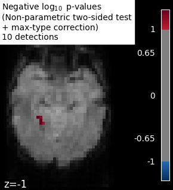

Note
Go to the end to download the full example code or to run this example in your browser via Binder
Massively univariate analysis of face vs house recognition#
A permuted Ordinary Least Squares algorithm is run at each voxel in order to determine whether or not it behaves differently under a “face viewing” condition and a “house viewing” condition. We consider the mean image per session and per condition. Otherwise, the observations cannot be exchanged at random because a time dependence exists between observations within a same session (see [1] for more detailed explanations).
The example shows the small differences that exist between Bonferroni-corrected p-values and family-wise corrected p-values obtained from a permutation test combined with a max-type procedure [2]. Bonferroni correction is a bit conservative, as revealed by the presence of a few false negative.
Note
If you are using Nilearn with a version older than 0.9.0,
then you should either upgrade your version or import maskers
from the input_data module instead of the maskers module.
That is, you should manually replace in the following example all occurrences of:
from nilearn.maskers import NiftiMasker
with:
from nilearn.input_data import NiftiMasker
References#
- [1] Winkler, A. M. et al. (2014).
Permutation inference for the general linear model. Neuroimage.
- [2] Anderson, M. J. & Robinson, J. (2001).
Permutation tests for linear models. Australian & New Zealand Journal of Statistics, 43(1), 75-88. (http://avesbiodiv.mncn.csic.es/estadistica/permut2.pdf)
# Author: Virgile Fritsch, <virgile.fritsch@inria.fr>, Feb. 2014
Load Haxby dataset
from nilearn import datasets, image
haxby_dataset = datasets.fetch_haxby(subjects=[2])
# print basic information on the dataset
print(f"Mask nifti image (3D) is located at: {haxby_dataset.mask}")
print(f"Functional nifti image (4D) is located at: {haxby_dataset.func[0]}")
Mask nifti image (3D) is located at: /home/runner/work/nilearn/nilearn/nilearn_data/haxby2001/mask.nii.gz
Functional nifti image (4D) is located at: /home/runner/work/nilearn/nilearn/nilearn_data/haxby2001/subj2/bold.nii.gz
Restrict to faces and houses
import numpy as np
import pandas as pd
labels = pd.read_csv(haxby_dataset.session_target[0], sep=" ")
conditions = labels["labels"]
categories = conditions.unique()
conditions_encoded = np.zeros_like(conditions)
for c, category in enumerate(categories):
conditions_encoded[conditions == category] = c
sessions = labels["chunks"]
condition_mask = conditions.isin(["face", "house"])
conditions_encoded = conditions_encoded[condition_mask]
Mask data
from nilearn.image import index_img
from nilearn.maskers import NiftiMasker
mask_filename = haxby_dataset.mask
nifti_masker = NiftiMasker(
smoothing_fwhm=8,
mask_img=mask_filename,
memory="nilearn_cache", # cache options
memory_level=1,
)
func_filename = haxby_dataset.func[0]
func_reduced = index_img(func_filename, condition_mask)
fmri_masked = nifti_masker.fit_transform(func_reduced)
# We consider the mean image per session and per condition.
# Otherwise, the observations cannot be exchanged at random because
# a time dependence exists between observations within a same session.
n_sessions = np.unique(sessions).size
conditions_per_session = 2
grouped_fmri_masked = np.empty(
(conditions_per_session * n_sessions, fmri_masked.shape[1])
)
grouped_conditions_encoded = np.empty((conditions_per_session * n_sessions, 1))
for s in range(n_sessions):
session_mask = sessions[condition_mask] == s
session_house_mask = np.logical_and(
session_mask, conditions[condition_mask] == "house"
)
session_face_mask = np.logical_and(
session_mask, conditions[condition_mask] == "face"
)
grouped_fmri_masked[2 * s] = fmri_masked[session_house_mask].mean(0)
grouped_fmri_masked[2 * s + 1] = fmri_masked[session_face_mask].mean(0)
grouped_conditions_encoded[2 * s] = conditions_encoded[session_house_mask][
0
]
grouped_conditions_encoded[2 * s + 1] = conditions_encoded[
session_face_mask
][0]
Perform massively univariate analysis with permuted OLS
We use a two-sided t-test to compute p-values, but we keep trace of the effect sign to add it back at the end and thus observe the signed effect
from nilearn.mass_univariate import permuted_ols
# Note that an intercept as a covariate is used by default
neg_log_pvals, t_scores_original_data, _ = permuted_ols(
grouped_conditions_encoded,
grouped_fmri_masked,
n_perm=10000,
two_sided_test=True,
verbose=1, # display progress bar
n_jobs=1, # can be changed to use more CPUs
)
signed_neg_log_pvals = neg_log_pvals * np.sign(t_scores_original_data)
signed_neg_log_pvals_unmasked = nifti_masker.inverse_transform(
signed_neg_log_pvals
)
[Parallel(n_jobs=1)]: Using backend SequentialBackend with 1 concurrent workers.
Job #1, processed 0/10000 permutations (0.00%, 24.96480941772461 seconds remaining)
Job #1, processed 10/10000 permutations (0.10%, 13.084903478622437 seconds remaining)
Job #1, processed 20/10000 permutations (0.20%, 11.34125518798828 seconds remaining)
Job #1, processed 30/10000 permutations (0.30%, 10.84671958287557 seconds remaining)
Job #1, processed 40/10000 permutations (0.40%, 10.4352171421051 seconds remaining)
Job #1, processed 50/10000 permutations (0.50%, 10.223702430725098 seconds remaining)
Job #1, processed 60/10000 permutations (0.60%, 10.015945196151735 seconds remaining)
Job #1, processed 70/10000 permutations (0.70%, 9.973146608897618 seconds remaining)
Job #1, processed 80/10000 permutations (0.80%, 9.95449161529541 seconds remaining)
Job #1, processed 90/10000 permutations (0.90%, 9.855175256729124 seconds remaining)
Job #1, processed 100/10000 permutations (1.00%, 9.805954456329346 seconds remaining)
Job #1, processed 110/10000 permutations (1.10%, 9.734558148817582 seconds remaining)
Job #1, processed 120/10000 permutations (1.20%, 9.69138749440511 seconds remaining)
Job #1, processed 130/10000 permutations (1.30%, 9.638346048501822 seconds remaining)
Job #1, processed 140/10000 permutations (1.40%, 9.617857456207275 seconds remaining)
Job #1, processed 150/10000 permutations (1.50%, 9.57337768872579 seconds remaining)
Job #1, processed 160/10000 permutations (1.60%, 9.530108213424683 seconds remaining)
Job #1, processed 170/10000 permutations (1.70%, 9.488561504027421 seconds remaining)
Job #1, processed 180/10000 permutations (1.80%, 9.448235909144083 seconds remaining)
Job #1, processed 190/10000 permutations (1.90%, 9.446023012462415 seconds remaining)
Job #1, processed 200/10000 permutations (2.00%, 9.418965578079224 seconds remaining)
Job #1, processed 210/10000 permutations (2.10%, 9.398981457664853 seconds remaining)
Job #1, processed 220/10000 permutations (2.20%, 9.36636231162331 seconds remaining)
Job #1, processed 230/10000 permutations (2.30%, 9.334270663883375 seconds remaining)
Job #1, processed 240/10000 permutations (2.40%, 9.307269891103108 seconds remaining)
Job #1, processed 250/10000 permutations (2.50%, 9.303048133850098 seconds remaining)
Job #1, processed 260/10000 permutations (2.60%, 9.274711755605844 seconds remaining)
Job #1, processed 270/10000 permutations (2.70%, 9.245957489366884 seconds remaining)
Job #1, processed 280/10000 permutations (2.80%, 9.217845337731498 seconds remaining)
Job #1, processed 290/10000 permutations (2.90%, 9.190854006800157 seconds remaining)
Job #1, processed 300/10000 permutations (3.00%, 9.174562056859335 seconds remaining)
Job #1, processed 310/10000 permutations (3.10%, 9.154580562345442 seconds remaining)
Job #1, processed 320/10000 permutations (3.20%, 9.146023929119108 seconds remaining)
Job #1, processed 330/10000 permutations (3.30%, 9.137530290719235 seconds remaining)
Job #1, processed 340/10000 permutations (3.40%, 9.123268183539896 seconds remaining)
Job #1, processed 350/10000 permutations (3.50%, 9.109382799693517 seconds remaining)
Job #1, processed 360/10000 permutations (3.60%, 9.11344403690762 seconds remaining)
Job #1, processed 370/10000 permutations (3.70%, 9.107632611248944 seconds remaining)
Job #1, processed 380/10000 permutations (3.80%, 9.091632943404349 seconds remaining)
Job #1, processed 390/10000 permutations (3.90%, 9.072551091512043 seconds remaining)
Job #1, processed 400/10000 permutations (4.00%, 9.056144714355469 seconds remaining)
Job #1, processed 410/10000 permutations (4.10%, 9.040159202203519 seconds remaining)
Job #1, processed 420/10000 permutations (4.20%, 9.023705051058814 seconds remaining)
Job #1, processed 430/10000 permutations (4.30%, 9.005299812139468 seconds remaining)
Job #1, processed 440/10000 permutations (4.40%, 8.988523179834537 seconds remaining)
Job #1, processed 450/10000 permutations (4.50%, 8.969392167197332 seconds remaining)
Job #1, processed 460/10000 permutations (4.60%, 8.950689243233724 seconds remaining)
Job #1, processed 470/10000 permutations (4.70%, 8.933706897370358 seconds remaining)
Job #1, processed 480/10000 permutations (4.80%, 8.91669273376465 seconds remaining)
Job #1, processed 490/10000 permutations (4.90%, 8.899039025209387 seconds remaining)
Job #1, processed 500/10000 permutations (5.00%, 8.883342027664185 seconds remaining)
Job #1, processed 510/10000 permutations (5.10%, 8.866952882093543 seconds remaining)
Job #1, processed 520/10000 permutations (5.20%, 8.852439825351421 seconds remaining)
Job #1, processed 530/10000 permutations (5.30%, 8.83785564494583 seconds remaining)
Job #1, processed 540/10000 permutations (5.40%, 8.824867495784051 seconds remaining)
Job #1, processed 550/10000 permutations (5.50%, 8.80854606628418 seconds remaining)
Job #1, processed 560/10000 permutations (5.60%, 8.79937355858939 seconds remaining)
Job #1, processed 570/10000 permutations (5.70%, 8.785363678346599 seconds remaining)
Job #1, processed 580/10000 permutations (5.80%, 8.774468150632135 seconds remaining)
Job #1, processed 590/10000 permutations (5.90%, 8.761868856721003 seconds remaining)
Job #1, processed 600/10000 permutations (6.00%, 8.747014045715332 seconds remaining)
Job #1, processed 610/10000 permutations (6.10%, 8.733277453750862 seconds remaining)
Job #1, processed 620/10000 permutations (6.20%, 8.728281459500712 seconds remaining)
Job #1, processed 630/10000 permutations (6.30%, 8.718416501605322 seconds remaining)
Job #1, processed 640/10000 permutations (6.40%, 8.70702204108238 seconds remaining)
Job #1, processed 650/10000 permutations (6.50%, 8.694955495687632 seconds remaining)
Job #1, processed 660/10000 permutations (6.60%, 8.682155284014616 seconds remaining)
Job #1, processed 670/10000 permutations (6.70%, 8.670227253614966 seconds remaining)
Job #1, processed 680/10000 permutations (6.80%, 8.658251495922313 seconds remaining)
Job #1, processed 690/10000 permutations (6.90%, 8.649148249971693 seconds remaining)
Job #1, processed 700/10000 permutations (7.00%, 8.638078553336008 seconds remaining)
Job #1, processed 710/10000 permutations (7.10%, 8.625003828129298 seconds remaining)
Job #1, processed 720/10000 permutations (7.20%, 8.611132727728949 seconds remaining)
Job #1, processed 730/10000 permutations (7.30%, 8.597384936189 seconds remaining)
Job #1, processed 740/10000 permutations (7.40%, 8.583943450773084 seconds remaining)
Job #1, processed 750/10000 permutations (7.50%, 8.570369084676107 seconds remaining)
Job #1, processed 760/10000 permutations (7.60%, 8.557079503410742 seconds remaining)
Job #1, processed 770/10000 permutations (7.70%, 8.544251714433942 seconds remaining)
Job #1, processed 780/10000 permutations (7.80%, 8.531880928919866 seconds remaining)
Job #1, processed 790/10000 permutations (7.90%, 8.518939670128157 seconds remaining)
Job #1, processed 800/10000 permutations (8.00%, 8.507784724235535 seconds remaining)
Job #1, processed 810/10000 permutations (8.10%, 8.496967645339025 seconds remaining)
Job #1, processed 820/10000 permutations (8.20%, 8.490857851214525 seconds remaining)
Job #1, processed 830/10000 permutations (8.30%, 8.479890125343598 seconds remaining)
Job #1, processed 840/10000 permutations (8.40%, 8.468782424926756 seconds remaining)
Job #1, processed 850/10000 permutations (8.50%, 8.458515559925754 seconds remaining)
Job #1, processed 860/10000 permutations (8.60%, 8.449060162832572 seconds remaining)
Job #1, processed 870/10000 permutations (8.70%, 8.44108376831844 seconds remaining)
Job #1, processed 880/10000 permutations (8.80%, 8.438499407334762 seconds remaining)
Job #1, processed 890/10000 permutations (8.90%, 8.429144639647408 seconds remaining)
Job #1, processed 900/10000 permutations (9.00%, 8.423890511194864 seconds remaining)
Job #1, processed 910/10000 permutations (9.10%, 8.421671571312372 seconds remaining)
Job #1, processed 920/10000 permutations (9.20%, 8.413415711858999 seconds remaining)
Job #1, processed 930/10000 permutations (9.30%, 8.406784539581626 seconds remaining)
Job #1, processed 940/10000 permutations (9.40%, 8.399358516043804 seconds remaining)
Job #1, processed 950/10000 permutations (9.50%, 8.393568126778854 seconds remaining)
Job #1, processed 960/10000 permutations (9.60%, 8.384933888912203 seconds remaining)
Job #1, processed 970/10000 permutations (9.70%, 8.378102818715204 seconds remaining)
Job #1, processed 980/10000 permutations (9.80%, 8.370512096249326 seconds remaining)
Job #1, processed 990/10000 permutations (9.90%, 8.361733561814432 seconds remaining)
Job #1, processed 1000/10000 permutations (10.00%, 8.357222557067871 seconds remaining)
Job #1, processed 1010/10000 permutations (10.10%, 8.352784874415635 seconds remaining)
Job #1, processed 1020/10000 permutations (10.20%, 8.351620870478014 seconds remaining)
Job #1, processed 1030/10000 permutations (10.30%, 8.347712718167351 seconds remaining)
Job #1, processed 1040/10000 permutations (10.40%, 8.34353285569411 seconds remaining)
Job #1, processed 1050/10000 permutations (10.50%, 8.335866439910163 seconds remaining)
Job #1, processed 1060/10000 permutations (10.60%, 8.326886455967742 seconds remaining)
Job #1, processed 1070/10000 permutations (10.70%, 8.319672397363966 seconds remaining)
Job #1, processed 1080/10000 permutations (10.80%, 8.310374736785889 seconds remaining)
Job #1, processed 1090/10000 permutations (10.90%, 8.302257725951868 seconds remaining)
Job #1, processed 1100/10000 permutations (11.00%, 8.291758970780807 seconds remaining)
Job #1, processed 1110/10000 permutations (11.10%, 8.282847999452471 seconds remaining)
Job #1, processed 1120/10000 permutations (11.20%, 8.274312615394592 seconds remaining)
Job #1, processed 1130/10000 permutations (11.30%, 8.267131575440938 seconds remaining)
Job #1, processed 1140/10000 permutations (11.40%, 8.257212195480077 seconds remaining)
Job #1, processed 1150/10000 permutations (11.50%, 8.254194197447404 seconds remaining)
Job #1, processed 1160/10000 permutations (11.60%, 8.246284032690115 seconds remaining)
Job #1, processed 1170/10000 permutations (11.70%, 8.236919592588375 seconds remaining)
Job #1, processed 1180/10000 permutations (11.80%, 8.228550244185884 seconds remaining)
Job #1, processed 1190/10000 permutations (11.90%, 8.218773489238835 seconds remaining)
Job #1, processed 1200/10000 permutations (12.00%, 8.211926778157551 seconds remaining)
Job #1, processed 1210/10000 permutations (12.10%, 8.202167012474755 seconds remaining)
Job #1, processed 1220/10000 permutations (12.20%, 8.194421037298735 seconds remaining)
Job #1, processed 1230/10000 permutations (12.30%, 8.189435311449252 seconds remaining)
Job #1, processed 1240/10000 permutations (12.40%, 8.18046034536054 seconds remaining)
Job #1, processed 1250/10000 permutations (12.50%, 8.17184591293335 seconds remaining)
Job #1, processed 1260/10000 permutations (12.60%, 8.163097620010376 seconds remaining)
Job #1, processed 1270/10000 permutations (12.70%, 8.154358345692552 seconds remaining)
Job #1, processed 1280/10000 permutations (12.80%, 8.14544102549553 seconds remaining)
Job #1, processed 1290/10000 permutations (12.90%, 8.137483661488968 seconds remaining)
Job #1, processed 1300/10000 permutations (13.00%, 8.131405371886034 seconds remaining)
Job #1, processed 1310/10000 permutations (13.10%, 8.123036619361121 seconds remaining)
Job #1, processed 1320/10000 permutations (13.20%, 8.114453279610837 seconds remaining)
Job #1, processed 1330/10000 permutations (13.30%, 8.107480841471737 seconds remaining)
Job #1, processed 1340/10000 permutations (13.40%, 8.10073406304886 seconds remaining)
Job #1, processed 1350/10000 permutations (13.50%, 8.0904673382088 seconds remaining)
Job #1, processed 1360/10000 permutations (13.60%, 8.081423310672536 seconds remaining)
Job #1, processed 1370/10000 permutations (13.70%, 8.072407101192614 seconds remaining)
Job #1, processed 1380/10000 permutations (13.80%, 8.063054613445116 seconds remaining)
Job #1, processed 1390/10000 permutations (13.90%, 8.054168778357745 seconds remaining)
Job #1, processed 1400/10000 permutations (14.00%, 8.048759392329625 seconds remaining)
Job #1, processed 1410/10000 permutations (14.10%, 8.041874567667644 seconds remaining)
Job #1, processed 1420/10000 permutations (14.20%, 8.03227688896824 seconds remaining)
Job #1, processed 1430/10000 permutations (14.30%, 8.026562365618618 seconds remaining)
Job #1, processed 1440/10000 permutations (14.40%, 8.01696495215098 seconds remaining)
Job #1, processed 1450/10000 permutations (14.50%, 8.009525027768365 seconds remaining)
Job #1, processed 1460/10000 permutations (14.60%, 8.004705357224974 seconds remaining)
Job #1, processed 1470/10000 permutations (14.70%, 7.996871956351663 seconds remaining)
Job #1, processed 1480/10000 permutations (14.80%, 7.990278250462301 seconds remaining)
Job #1, processed 1490/10000 permutations (14.90%, 7.984056047145151 seconds remaining)
Job #1, processed 1500/10000 permutations (15.00%, 7.991425832112631 seconds remaining)
Job #1, processed 1510/10000 permutations (15.10%, 7.987041031287996 seconds remaining)
Job #1, processed 1520/10000 permutations (15.20%, 7.976861602381657 seconds remaining)
Job #1, processed 1530/10000 permutations (15.30%, 7.970058427137487 seconds remaining)
Job #1, processed 1540/10000 permutations (15.40%, 7.960391502875786 seconds remaining)
Job #1, processed 1550/10000 permutations (15.50%, 7.951102833594045 seconds remaining)
Job #1, processed 1560/10000 permutations (15.60%, 7.94108482507559 seconds remaining)
Job #1, processed 1570/10000 permutations (15.70%, 7.930707310415378 seconds remaining)
Job #1, processed 1580/10000 permutations (15.80%, 7.921574242507355 seconds remaining)
Job #1, processed 1590/10000 permutations (15.90%, 7.91172204527465 seconds remaining)
Job #1, processed 1600/10000 permutations (16.00%, 7.90200412273407 seconds remaining)
Job #1, processed 1610/10000 permutations (16.10%, 7.893544414769049 seconds remaining)
Job #1, processed 1620/10000 permutations (16.20%, 7.8844639813458475 seconds remaining)
Job #1, processed 1630/10000 permutations (16.30%, 7.875241629185121 seconds remaining)
Job #1, processed 1640/10000 permutations (16.40%, 7.867771532477402 seconds remaining)
Job #1, processed 1650/10000 permutations (16.50%, 7.85825236638387 seconds remaining)
Job #1, processed 1660/10000 permutations (16.60%, 7.847939393606531 seconds remaining)
Job #1, processed 1670/10000 permutations (16.70%, 7.841430661207188 seconds remaining)
Job #1, processed 1680/10000 permutations (16.80%, 7.832491829281762 seconds remaining)
Job #1, processed 1690/10000 permutations (16.90%, 7.821938964742175 seconds remaining)
Job #1, processed 1700/10000 permutations (17.00%, 7.810779459336225 seconds remaining)
Job #1, processed 1710/10000 permutations (17.10%, 7.800811969745927 seconds remaining)
Job #1, processed 1720/10000 permutations (17.20%, 7.790381719899732 seconds remaining)
Job #1, processed 1730/10000 permutations (17.30%, 7.779360523113626 seconds remaining)
Job #1, processed 1740/10000 permutations (17.40%, 7.768548485876499 seconds remaining)
Job #1, processed 1750/10000 permutations (17.50%, 7.757358006068639 seconds remaining)
Job #1, processed 1760/10000 permutations (17.60%, 7.746293696490201 seconds remaining)
Job #1, processed 1770/10000 permutations (17.70%, 7.734885230576252 seconds remaining)
Job #1, processed 1780/10000 permutations (17.80%, 7.724274881770103 seconds remaining)
Job #1, processed 1790/10000 permutations (17.90%, 7.712889291720683 seconds remaining)
Job #1, processed 1800/10000 permutations (18.00%, 7.701652261945936 seconds remaining)
Job #1, processed 1810/10000 permutations (18.10%, 7.690779886193038 seconds remaining)
Job #1, processed 1820/10000 permutations (18.20%, 7.680246698987353 seconds remaining)
Job #1, processed 1830/10000 permutations (18.30%, 7.66991505205957 seconds remaining)
Job #1, processed 1840/10000 permutations (18.40%, 7.659579028253971 seconds remaining)
Job #1, processed 1850/10000 permutations (18.50%, 7.6492251061104435 seconds remaining)
Job #1, processed 1860/10000 permutations (18.60%, 7.640268538587836 seconds remaining)
Job #1, processed 1870/10000 permutations (18.70%, 7.630885496496517 seconds remaining)
Job #1, processed 1880/10000 permutations (18.80%, 7.621622897209005 seconds remaining)
Job #1, processed 1890/10000 permutations (18.90%, 7.611570936031443 seconds remaining)
Job #1, processed 1900/10000 permutations (19.00%, 7.602648722498041 seconds remaining)
Job #1, processed 1910/10000 permutations (19.10%, 7.592954047687391 seconds remaining)
Job #1, processed 1920/10000 permutations (19.20%, 7.584056993325551 seconds remaining)
Job #1, processed 1930/10000 permutations (19.30%, 7.576349966266612 seconds remaining)
Job #1, processed 1940/10000 permutations (19.40%, 7.566422482126767 seconds remaining)
Job #1, processed 1950/10000 permutations (19.50%, 7.557195749038306 seconds remaining)
Job #1, processed 1960/10000 permutations (19.60%, 7.54850096605262 seconds remaining)
Job #1, processed 1970/10000 permutations (19.70%, 7.538494210557889 seconds remaining)
Job #1, processed 1980/10000 permutations (19.80%, 7.529975671960849 seconds remaining)
Job #1, processed 1990/10000 permutations (19.90%, 7.519375282316353 seconds remaining)
Job #1, processed 2000/10000 permutations (20.00%, 7.509921073913574 seconds remaining)
Job #1, processed 2010/10000 permutations (20.10%, 7.502937514983599 seconds remaining)
Job #1, processed 2020/10000 permutations (20.20%, 7.4952074041461 seconds remaining)
Job #1, processed 2030/10000 permutations (20.30%, 7.486627448368543 seconds remaining)
Job #1, processed 2040/10000 permutations (20.40%, 7.477253254722147 seconds remaining)
Job #1, processed 2050/10000 permutations (20.50%, 7.4671789029749425 seconds remaining)
Job #1, processed 2060/10000 permutations (20.60%, 7.457757970661793 seconds remaining)
Job #1, processed 2070/10000 permutations (20.70%, 7.448838817900506 seconds remaining)
Job #1, processed 2080/10000 permutations (20.80%, 7.438317060470581 seconds remaining)
Job #1, processed 2090/10000 permutations (20.90%, 7.43078214928294 seconds remaining)
Job #1, processed 2100/10000 permutations (21.00%, 7.421869652611869 seconds remaining)
Job #1, processed 2110/10000 permutations (21.10%, 7.4138375548954825 seconds remaining)
Job #1, processed 2120/10000 permutations (21.20%, 7.403529360609234 seconds remaining)
Job #1, processed 2130/10000 permutations (21.30%, 7.3935694213204535 seconds remaining)
Job #1, processed 2140/10000 permutations (21.40%, 7.383283425714368 seconds remaining)
Job #1, processed 2150/10000 permutations (21.50%, 7.373291764148446 seconds remaining)
Job #1, processed 2160/10000 permutations (21.60%, 7.363506193514223 seconds remaining)
Job #1, processed 2170/10000 permutations (21.70%, 7.353049057419948 seconds remaining)
Job #1, processed 2180/10000 permutations (21.80%, 7.343878713222819 seconds remaining)
Job #1, processed 2190/10000 permutations (21.90%, 7.3358391779198495 seconds remaining)
Job #1, processed 2200/10000 permutations (22.00%, 7.328427184711803 seconds remaining)
Job #1, processed 2210/10000 permutations (22.10%, 7.319852628319511 seconds remaining)
Job #1, processed 2220/10000 permutations (22.20%, 7.311179176107184 seconds remaining)
Job #1, processed 2230/10000 permutations (22.30%, 7.3027607282715525 seconds remaining)
Job #1, processed 2240/10000 permutations (22.40%, 7.2928467988967896 seconds remaining)
Job #1, processed 2250/10000 permutations (22.50%, 7.282358990775215 seconds remaining)
Job #1, processed 2260/10000 permutations (22.60%, 7.272052648848137 seconds remaining)
Job #1, processed 2270/10000 permutations (22.70%, 7.26234121889795 seconds remaining)
Job #1, processed 2280/10000 permutations (22.80%, 7.2533131022202335 seconds remaining)
Job #1, processed 2290/10000 permutations (22.90%, 7.244275215931855 seconds remaining)
Job #1, processed 2300/10000 permutations (23.00%, 7.233850841936858 seconds remaining)
Job #1, processed 2310/10000 permutations (23.10%, 7.2242491895502265 seconds remaining)
Job #1, processed 2320/10000 permutations (23.20%, 7.2146932667699355 seconds remaining)
Job #1, processed 2330/10000 permutations (23.30%, 7.204541888871418 seconds remaining)
Job #1, processed 2340/10000 permutations (23.40%, 7.195681252031244 seconds remaining)
Job #1, processed 2350/10000 permutations (23.50%, 7.186023823758389 seconds remaining)
Job #1, processed 2360/10000 permutations (23.60%, 7.176038972402024 seconds remaining)
Job #1, processed 2370/10000 permutations (23.70%, 7.165994642153068 seconds remaining)
Job #1, processed 2380/10000 permutations (23.80%, 7.15628419803972 seconds remaining)
Job #1, processed 2390/10000 permutations (23.90%, 7.146094433932125 seconds remaining)
Job #1, processed 2400/10000 permutations (24.00%, 7.135968526204427 seconds remaining)
Job #1, processed 2410/10000 permutations (24.10%, 7.125548799997543 seconds remaining)
Job #1, processed 2420/10000 permutations (24.20%, 7.117154363758308 seconds remaining)
Job #1, processed 2430/10000 permutations (24.30%, 7.107207978213275 seconds remaining)
Job #1, processed 2440/10000 permutations (24.40%, 7.097199662787015 seconds remaining)
Job #1, processed 2450/10000 permutations (24.50%, 7.088300850926614 seconds remaining)
Job #1, processed 2460/10000 permutations (24.60%, 7.079838153792591 seconds remaining)
Job #1, processed 2470/10000 permutations (24.70%, 7.070014321369681 seconds remaining)
Job #1, processed 2480/10000 permutations (24.80%, 7.060314424576298 seconds remaining)
Job #1, processed 2490/10000 permutations (24.90%, 7.051321832051717 seconds remaining)
Job #1, processed 2500/10000 permutations (25.00%, 7.041841506958008 seconds remaining)
Job #1, processed 2510/10000 permutations (25.10%, 7.0327897347302075 seconds remaining)
Job #1, processed 2520/10000 permutations (25.20%, 7.022467628357902 seconds remaining)
Job #1, processed 2530/10000 permutations (25.30%, 7.0121363707681885 seconds remaining)
Job #1, processed 2540/10000 permutations (25.40%, 7.002810089606939 seconds remaining)
Job #1, processed 2550/10000 permutations (25.50%, 6.992504507887597 seconds remaining)
Job #1, processed 2560/10000 permutations (25.60%, 6.982508584856987 seconds remaining)
Job #1, processed 2570/10000 permutations (25.70%, 6.972632084375226 seconds remaining)
Job #1, processed 2580/10000 permutations (25.80%, 6.967942428219226 seconds remaining)
Job #1, processed 2590/10000 permutations (25.90%, 6.962301473359804 seconds remaining)
Job #1, processed 2600/10000 permutations (26.00%, 6.955159260676457 seconds remaining)
Job #1, processed 2610/10000 permutations (26.10%, 6.945832161154327 seconds remaining)
Job #1, processed 2620/10000 permutations (26.20%, 6.9361181641353 seconds remaining)
Job #1, processed 2630/10000 permutations (26.30%, 6.926402068410083 seconds remaining)
Job #1, processed 2640/10000 permutations (26.40%, 6.916422034754897 seconds remaining)
Job #1, processed 2650/10000 permutations (26.50%, 6.906205280771795 seconds remaining)
Job #1, processed 2660/10000 permutations (26.60%, 6.89588835723418 seconds remaining)
Job #1, processed 2670/10000 permutations (26.70%, 6.8860442406229305 seconds remaining)
Job #1, processed 2680/10000 permutations (26.80%, 6.876155205626986 seconds remaining)
Job #1, processed 2690/10000 permutations (26.90%, 6.8659226273958565 seconds remaining)
Job #1, processed 2700/10000 permutations (27.00%, 6.858043008380466 seconds remaining)
Job #1, processed 2710/10000 permutations (27.10%, 6.849678622840516 seconds remaining)
Job #1, processed 2720/10000 permutations (27.20%, 6.839967622476465 seconds remaining)
Job #1, processed 2730/10000 permutations (27.30%, 6.831236282984415 seconds remaining)
Job #1, processed 2740/10000 permutations (27.40%, 6.821929092824894 seconds remaining)
Job #1, processed 2750/10000 permutations (27.50%, 6.812950372695923 seconds remaining)
Job #1, processed 2760/10000 permutations (27.60%, 6.803846770438596 seconds remaining)
Job #1, processed 2770/10000 permutations (27.70%, 6.794209420035462 seconds remaining)
Job #1, processed 2780/10000 permutations (27.80%, 6.784927400753652 seconds remaining)
Job #1, processed 2790/10000 permutations (27.90%, 6.775240057258196 seconds remaining)
Job #1, processed 2800/10000 permutations (28.00%, 6.765027727399554 seconds remaining)
Job #1, processed 2810/10000 permutations (28.10%, 6.754960717679767 seconds remaining)
Job #1, processed 2820/10000 permutations (28.20%, 6.745577174721034 seconds remaining)
Job #1, processed 2830/10000 permutations (28.30%, 6.735483760968536 seconds remaining)
Job #1, processed 2840/10000 permutations (28.40%, 6.726146157358733 seconds remaining)
Job #1, processed 2850/10000 permutations (28.50%, 6.716513717383669 seconds remaining)
Job #1, processed 2860/10000 permutations (28.60%, 6.706496125334627 seconds remaining)
Job #1, processed 2870/10000 permutations (28.70%, 6.696393999073147 seconds remaining)
Job #1, processed 2880/10000 permutations (28.80%, 6.686025288369921 seconds remaining)
Job #1, processed 2890/10000 permutations (28.90%, 6.675887205196498 seconds remaining)
Job #1, processed 2900/10000 permutations (29.00%, 6.6655905986654345 seconds remaining)
Job #1, processed 2910/10000 permutations (29.10%, 6.65525978783152 seconds remaining)
Job #1, processed 2920/10000 permutations (29.20%, 6.644931724626724 seconds remaining)
Job #1, processed 2930/10000 permutations (29.30%, 6.634791078014179 seconds remaining)
Job #1, processed 2940/10000 permutations (29.40%, 6.625497024886462 seconds remaining)
Job #1, processed 2950/10000 permutations (29.50%, 6.6151622554003175 seconds remaining)
Job #1, processed 2960/10000 permutations (29.60%, 6.605363948925122 seconds remaining)
Job #1, processed 2970/10000 permutations (29.70%, 6.595118142940379 seconds remaining)
Job #1, processed 2980/10000 permutations (29.80%, 6.585741015888701 seconds remaining)
Job #1, processed 2990/10000 permutations (29.90%, 6.576305715535397 seconds remaining)
Job #1, processed 3000/10000 permutations (30.00%, 6.566847006479899 seconds remaining)
Job #1, processed 3010/10000 permutations (30.10%, 6.557359687513688 seconds remaining)
Job #1, processed 3020/10000 permutations (30.20%, 6.547916355512 seconds remaining)
Job #1, processed 3030/10000 permutations (30.30%, 6.538178002480233 seconds remaining)
Job #1, processed 3040/10000 permutations (30.40%, 6.528086034875167 seconds remaining)
Job #1, processed 3050/10000 permutations (30.50%, 6.518676613197952 seconds remaining)
Job #1, processed 3060/10000 permutations (30.60%, 6.5089733179877785 seconds remaining)
Job #1, processed 3070/10000 permutations (30.70%, 6.500529735018454 seconds remaining)
Job #1, processed 3080/10000 permutations (30.80%, 6.491013551687265 seconds remaining)
Job #1, processed 3090/10000 permutations (30.90%, 6.481547690518079 seconds remaining)
Job #1, processed 3100/10000 permutations (31.00%, 6.4727650765449765 seconds remaining)
Job #1, processed 3110/10000 permutations (31.10%, 6.4634872533117464 seconds remaining)
Job #1, processed 3120/10000 permutations (31.20%, 6.454536535801032 seconds remaining)
Job #1, processed 3130/10000 permutations (31.30%, 6.445108757232325 seconds remaining)
Job #1, processed 3140/10000 permutations (31.40%, 6.436514808873461 seconds remaining)
Job #1, processed 3150/10000 permutations (31.50%, 6.4275314618670745 seconds remaining)
Job #1, processed 3160/10000 permutations (31.60%, 6.420200495780269 seconds remaining)
Job #1, processed 3170/10000 permutations (31.70%, 6.4113233976935735 seconds remaining)
Job #1, processed 3180/10000 permutations (31.80%, 6.403984279752528 seconds remaining)
Job #1, processed 3190/10000 permutations (31.90%, 6.395581918824055 seconds remaining)
Job #1, processed 3200/10000 permutations (32.00%, 6.38714262843132 seconds remaining)
Job #1, processed 3210/10000 permutations (32.10%, 6.378872638179505 seconds remaining)
Job #1, processed 3220/10000 permutations (32.20%, 6.36938152402084 seconds remaining)
Job #1, processed 3230/10000 permutations (32.30%, 6.359740376841543 seconds remaining)
Job #1, processed 3240/10000 permutations (32.40%, 6.350367113395973 seconds remaining)
Job #1, processed 3250/10000 permutations (32.50%, 6.340746072622446 seconds remaining)
Job #1, processed 3260/10000 permutations (32.60%, 6.331242439937006 seconds remaining)
Job #1, processed 3270/10000 permutations (32.70%, 6.321657368896203 seconds remaining)
Job #1, processed 3280/10000 permutations (32.80%, 6.314279463233017 seconds remaining)
Job #1, processed 3290/10000 permutations (32.90%, 6.3052558210483065 seconds remaining)
Job #1, processed 3300/10000 permutations (33.00%, 6.2967753193595195 seconds remaining)
Job #1, processed 3310/10000 permutations (33.10%, 6.287350744639279 seconds remaining)
Job #1, processed 3320/10000 permutations (33.20%, 6.2783303232078085 seconds remaining)
Job #1, processed 3330/10000 permutations (33.30%, 6.2685524493724385 seconds remaining)
Job #1, processed 3340/10000 permutations (33.40%, 6.259173044901408 seconds remaining)
Job #1, processed 3350/10000 permutations (33.50%, 6.250234568296973 seconds remaining)
Job #1, processed 3360/10000 permutations (33.60%, 6.240849557377043 seconds remaining)
Job #1, processed 3370/10000 permutations (33.70%, 6.232609385906411 seconds remaining)
Job #1, processed 3380/10000 permutations (33.80%, 6.2235468266278335 seconds remaining)
Job #1, processed 3390/10000 permutations (33.90%, 6.214555170683734 seconds remaining)
Job #1, processed 3400/10000 permutations (34.00%, 6.204985057606416 seconds remaining)
Job #1, processed 3410/10000 permutations (34.10%, 6.195496612280345 seconds remaining)
Job #1, processed 3420/10000 permutations (34.20%, 6.1858245364406645 seconds remaining)
Job #1, processed 3430/10000 permutations (34.30%, 6.175985431532124 seconds remaining)
Job #1, processed 3440/10000 permutations (34.40%, 6.16644664143407 seconds remaining)
Job #1, processed 3450/10000 permutations (34.50%, 6.157652326252149 seconds remaining)
Job #1, processed 3460/10000 permutations (34.60%, 6.150397952581417 seconds remaining)
Job #1, processed 3470/10000 permutations (34.70%, 6.142572352109792 seconds remaining)
Job #1, processed 3480/10000 permutations (34.80%, 6.133541082513744 seconds remaining)
Job #1, processed 3490/10000 permutations (34.90%, 6.123925252083721 seconds remaining)
Job #1, processed 3500/10000 permutations (35.00%, 6.114100933074951 seconds remaining)
Job #1, processed 3510/10000 permutations (35.10%, 6.105366053404632 seconds remaining)
Job #1, processed 3520/10000 permutations (35.20%, 6.096329911188644 seconds remaining)
Job #1, processed 3530/10000 permutations (35.30%, 6.086634167193017 seconds remaining)
Job #1, processed 3540/10000 permutations (35.40%, 6.077238966516182 seconds remaining)
Job #1, processed 3550/10000 permutations (35.50%, 6.0675746521479645 seconds remaining)
Job #1, processed 3560/10000 permutations (35.60%, 6.059099934074316 seconds remaining)
Job #1, processed 3570/10000 permutations (35.70%, 6.049991009949969 seconds remaining)
Job #1, processed 3580/10000 permutations (35.80%, 6.040517771044257 seconds remaining)
Job #1, processed 3590/10000 permutations (35.90%, 6.030818191411435 seconds remaining)
Job #1, processed 3600/10000 permutations (36.00%, 6.021361880832248 seconds remaining)
Job #1, processed 3610/10000 permutations (36.10%, 6.011551909169332 seconds remaining)
Job #1, processed 3620/10000 permutations (36.20%, 6.002743796090394 seconds remaining)
Job #1, processed 3630/10000 permutations (36.30%, 5.993461916926151 seconds remaining)
Job #1, processed 3640/10000 permutations (36.40%, 5.983870676585606 seconds remaining)
Job #1, processed 3650/10000 permutations (36.50%, 5.975831880961379 seconds remaining)
Job #1, processed 3660/10000 permutations (36.60%, 5.966048356613826 seconds remaining)
Job #1, processed 3670/10000 permutations (36.70%, 5.9568503286273335 seconds remaining)
Job #1, processed 3680/10000 permutations (36.80%, 5.947098939315134 seconds remaining)
Job #1, processed 3690/10000 permutations (36.90%, 5.937793645755385 seconds remaining)
Job #1, processed 3700/10000 permutations (37.00%, 5.927987723737149 seconds remaining)
Job #1, processed 3710/10000 permutations (37.10%, 5.918684803250665 seconds remaining)
Job #1, processed 3720/10000 permutations (37.20%, 5.909136659355573 seconds remaining)
Job #1, processed 3730/10000 permutations (37.30%, 5.899243028809495 seconds remaining)
Job #1, processed 3740/10000 permutations (37.40%, 5.8895965578721805 seconds remaining)
Job #1, processed 3750/10000 permutations (37.50%, 5.879638989766439 seconds remaining)
Job #1, processed 3760/10000 permutations (37.60%, 5.870289102513739 seconds remaining)
Job #1, processed 3770/10000 permutations (37.70%, 5.860492333809323 seconds remaining)
Job #1, processed 3780/10000 permutations (37.80%, 5.850528604769834 seconds remaining)
Job #1, processed 3790/10000 permutations (37.90%, 5.840866106481226 seconds remaining)
Job #1, processed 3800/10000 permutations (38.00%, 5.831261408956427 seconds remaining)
Job #1, processed 3810/10000 permutations (38.10%, 5.8215452905089204 seconds remaining)
Job #1, processed 3820/10000 permutations (38.20%, 5.812370257851964 seconds remaining)
Job #1, processed 3830/10000 permutations (38.30%, 5.80244854473881 seconds remaining)
Job #1, processed 3840/10000 permutations (38.40%, 5.792778645952543 seconds remaining)
Job #1, processed 3850/10000 permutations (38.50%, 5.7829853064054015 seconds remaining)
Job #1, processed 3860/10000 permutations (38.60%, 5.773337844739923 seconds remaining)
Job #1, processed 3870/10000 permutations (38.70%, 5.7636206852373215 seconds remaining)
Job #1, processed 3880/10000 permutations (38.80%, 5.754546226914397 seconds remaining)
Job #1, processed 3890/10000 permutations (38.90%, 5.745079552299872 seconds remaining)
Job #1, processed 3900/10000 permutations (39.00%, 5.735519812657283 seconds remaining)
Job #1, processed 3910/10000 permutations (39.10%, 5.726176771056621 seconds remaining)
Job #1, processed 3920/10000 permutations (39.20%, 5.716344366268235 seconds remaining)
Job #1, processed 3930/10000 permutations (39.30%, 5.706885644801094 seconds remaining)
Job #1, processed 3940/10000 permutations (39.40%, 5.697044925641288 seconds remaining)
Job #1, processed 3950/10000 permutations (39.50%, 5.687136665175233 seconds remaining)
Job #1, processed 3960/10000 permutations (39.60%, 5.6775042842132875 seconds remaining)
Job #1, processed 3970/10000 permutations (39.70%, 5.6676123802848055 seconds remaining)
Job #1, processed 3980/10000 permutations (39.80%, 5.6584000240019225 seconds remaining)
Job #1, processed 3990/10000 permutations (39.90%, 5.649176058016326 seconds remaining)
Job #1, processed 4000/10000 permutations (40.00%, 5.640351176261902 seconds remaining)
Job #1, processed 4010/10000 permutations (40.10%, 5.630620122847711 seconds remaining)
Job #1, processed 4020/10000 permutations (40.20%, 5.62096522933808 seconds remaining)
Job #1, processed 4030/10000 permutations (40.30%, 5.611062038625145 seconds remaining)
Job #1, processed 4040/10000 permutations (40.40%, 5.6014349082909005 seconds remaining)
Job #1, processed 4050/10000 permutations (40.50%, 5.59191405037303 seconds remaining)
Job #1, processed 4060/10000 permutations (40.60%, 5.582342930028004 seconds remaining)
Job #1, processed 4070/10000 permutations (40.70%, 5.5726867436776875 seconds remaining)
Job #1, processed 4080/10000 permutations (40.80%, 5.563217770819572 seconds remaining)
Job #1, processed 4090/10000 permutations (40.90%, 5.553794519825495 seconds remaining)
Job #1, processed 4100/10000 permutations (41.00%, 5.544324479451993 seconds remaining)
Job #1, processed 4110/10000 permutations (41.10%, 5.535291358502241 seconds remaining)
Job #1, processed 4120/10000 permutations (41.20%, 5.526314103487625 seconds remaining)
Job #1, processed 4130/10000 permutations (41.30%, 5.518560419359739 seconds remaining)
Job #1, processed 4140/10000 permutations (41.40%, 5.509245215982631 seconds remaining)
Job #1, processed 4150/10000 permutations (41.50%, 5.49982142161174 seconds remaining)
Job #1, processed 4160/10000 permutations (41.60%, 5.490452032822828 seconds remaining)
Job #1, processed 4170/10000 permutations (41.70%, 5.480919716741254 seconds remaining)
Job #1, processed 4180/10000 permutations (41.80%, 5.471762926384594 seconds remaining)
Job #1, processed 4190/10000 permutations (41.90%, 5.462152862890239 seconds remaining)
Job #1, processed 4200/10000 permutations (42.00%, 5.453084798086257 seconds remaining)
Job #1, processed 4210/10000 permutations (42.10%, 5.44438518254604 seconds remaining)
Job #1, processed 4220/10000 permutations (42.20%, 5.435363714163902 seconds remaining)
Job #1, processed 4230/10000 permutations (42.30%, 5.4257677148138095 seconds remaining)
Job #1, processed 4240/10000 permutations (42.40%, 5.416146080448943 seconds remaining)
Job #1, processed 4250/10000 permutations (42.50%, 5.406600096646478 seconds remaining)
Job #1, processed 4260/10000 permutations (42.60%, 5.397355648273593 seconds remaining)
Job #1, processed 4270/10000 permutations (42.70%, 5.387927542804834 seconds remaining)
Job #1, processed 4280/10000 permutations (42.80%, 5.378161252102006 seconds remaining)
Job #1, processed 4290/10000 permutations (42.90%, 5.369216013621617 seconds remaining)
Job #1, processed 4300/10000 permutations (43.00%, 5.35963496496511 seconds remaining)
Job #1, processed 4310/10000 permutations (43.10%, 5.3500818039037785 seconds remaining)
Job #1, processed 4320/10000 permutations (43.20%, 5.340632058956004 seconds remaining)
Job #1, processed 4330/10000 permutations (43.30%, 5.331161467638082 seconds remaining)
Job #1, processed 4340/10000 permutations (43.40%, 5.321710707405196 seconds remaining)
Job #1, processed 4350/10000 permutations (43.50%, 5.311887497189401 seconds remaining)
Job #1, processed 4360/10000 permutations (43.60%, 5.302842129261122 seconds remaining)
Job #1, processed 4370/10000 permutations (43.70%, 5.2930241236697615 seconds remaining)
Job #1, processed 4380/10000 permutations (43.80%, 5.283524278092058 seconds remaining)
Job #1, processed 4390/10000 permutations (43.90%, 5.273798855670765 seconds remaining)
Job #1, processed 4400/10000 permutations (44.00%, 5.26415374062278 seconds remaining)
Job #1, processed 4410/10000 permutations (44.10%, 5.254468295038963 seconds remaining)
Job #1, processed 4420/10000 permutations (44.20%, 5.2448077320513145 seconds remaining)
Job #1, processed 4430/10000 permutations (44.30%, 5.235469136227335 seconds remaining)
Job #1, processed 4440/10000 permutations (44.40%, 5.225690270329381 seconds remaining)
Job #1, processed 4450/10000 permutations (44.50%, 5.2160286555129485 seconds remaining)
Job #1, processed 4460/10000 permutations (44.60%, 5.206550113823382 seconds remaining)
Job #1, processed 4470/10000 permutations (44.70%, 5.197597537798102 seconds remaining)
Job #1, processed 4480/10000 permutations (44.80%, 5.188075278486525 seconds remaining)
Job #1, processed 4490/10000 permutations (44.90%, 5.178826699543636 seconds remaining)
Job #1, processed 4500/10000 permutations (45.00%, 5.169371472464668 seconds remaining)
Job #1, processed 4510/10000 permutations (45.10%, 5.159742273406813 seconds remaining)
Job #1, processed 4520/10000 permutations (45.20%, 5.150117243285727 seconds remaining)
Job #1, processed 4530/10000 permutations (45.30%, 5.140334546697588 seconds remaining)
Job #1, processed 4540/10000 permutations (45.40%, 5.130761395467011 seconds remaining)
Job #1, processed 4550/10000 permutations (45.50%, 5.121338160483392 seconds remaining)
Job #1, processed 4560/10000 permutations (45.60%, 5.111732533103541 seconds remaining)
Job #1, processed 4570/10000 permutations (45.70%, 5.102184391647772 seconds remaining)
Job #1, processed 4580/10000 permutations (45.80%, 5.092793778040525 seconds remaining)
Job #1, processed 4590/10000 permutations (45.90%, 5.083307855788918 seconds remaining)
Job #1, processed 4600/10000 permutations (46.00%, 5.074153195256772 seconds remaining)
Job #1, processed 4610/10000 permutations (46.10%, 5.064895684186393 seconds remaining)
Job #1, processed 4620/10000 permutations (46.20%, 5.055438266688094 seconds remaining)
Job #1, processed 4630/10000 permutations (46.30%, 5.046571991613566 seconds remaining)
Job #1, processed 4640/10000 permutations (46.40%, 5.037240139369307 seconds remaining)
Job #1, processed 4650/10000 permutations (46.50%, 5.027996634924284 seconds remaining)
Job #1, processed 4660/10000 permutations (46.60%, 5.018490977553339 seconds remaining)
Job #1, processed 4670/10000 permutations (46.70%, 5.009067000362551 seconds remaining)
Job #1, processed 4680/10000 permutations (46.80%, 4.99953888827919 seconds remaining)
Job #1, processed 4690/10000 permutations (46.90%, 4.990220211207994 seconds remaining)
Job #1, processed 4700/10000 permutations (47.00%, 4.980566983527325 seconds remaining)
Job #1, processed 4710/10000 permutations (47.10%, 4.971482688454306 seconds remaining)
Job #1, processed 4720/10000 permutations (47.20%, 4.9619584891755695 seconds remaining)
Job #1, processed 4730/10000 permutations (47.30%, 4.952355610139779 seconds remaining)
Job #1, processed 4740/10000 permutations (47.40%, 4.943115518062929 seconds remaining)
Job #1, processed 4750/10000 permutations (47.50%, 4.933515260094091 seconds remaining)
Job #1, processed 4760/10000 permutations (47.60%, 4.924141553269714 seconds remaining)
Job #1, processed 4770/10000 permutations (47.70%, 4.914777592293121 seconds remaining)
Job #1, processed 4780/10000 permutations (47.80%, 4.905324320414077 seconds remaining)
Job #1, processed 4790/10000 permutations (47.90%, 4.895689710445842 seconds remaining)
Job #1, processed 4800/10000 permutations (48.00%, 4.8860737880071 seconds remaining)
Job #1, processed 4810/10000 permutations (48.10%, 4.8765100401801025 seconds remaining)
Job #1, processed 4820/10000 permutations (48.20%, 4.867106491104695 seconds remaining)
Job #1, processed 4830/10000 permutations (48.30%, 4.857572849739659 seconds remaining)
Job #1, processed 4840/10000 permutations (48.40%, 4.848192309545091 seconds remaining)
Job #1, processed 4850/10000 permutations (48.50%, 4.838964813763333 seconds remaining)
Job #1, processed 4860/10000 permutations (48.60%, 4.829414728737662 seconds remaining)
Job #1, processed 4870/10000 permutations (48.70%, 4.819874413449171 seconds remaining)
Job #1, processed 4880/10000 permutations (48.80%, 4.810949606973617 seconds remaining)
Job #1, processed 4890/10000 permutations (48.90%, 4.802380058663023 seconds remaining)
Job #1, processed 4900/10000 permutations (49.00%, 4.792887984489909 seconds remaining)
Job #1, processed 4910/10000 permutations (49.10%, 4.783491817851173 seconds remaining)
Job #1, processed 4920/10000 permutations (49.20%, 4.77399446130768 seconds remaining)
Job #1, processed 4930/10000 permutations (49.30%, 4.764437092728838 seconds remaining)
Job #1, processed 4940/10000 permutations (49.40%, 4.754903955498205 seconds remaining)
Job #1, processed 4950/10000 permutations (49.50%, 4.745694432595763 seconds remaining)
Job #1, processed 4960/10000 permutations (49.60%, 4.736591946694158 seconds remaining)
Job #1, processed 4970/10000 permutations (49.70%, 4.727351738413574 seconds remaining)
Job #1, processed 4980/10000 permutations (49.80%, 4.718421742619281 seconds remaining)
Job #1, processed 4990/10000 permutations (49.90%, 4.70921703617654 seconds remaining)
Job #1, processed 5000/10000 permutations (50.00%, 4.699678421020508 seconds remaining)
Job #1, processed 5010/10000 permutations (50.10%, 4.690082023719589 seconds remaining)
Job #1, processed 5020/10000 permutations (50.20%, 4.680488145683865 seconds remaining)
Job #1, processed 5030/10000 permutations (50.30%, 4.671067322224793 seconds remaining)
Job #1, processed 5040/10000 permutations (50.40%, 4.661685625712077 seconds remaining)
Job #1, processed 5050/10000 permutations (50.50%, 4.652300756756622 seconds remaining)
Job #1, processed 5060/10000 permutations (50.60%, 4.643431351590062 seconds remaining)
Job #1, processed 5070/10000 permutations (50.70%, 4.633942662376388 seconds remaining)
Job #1, processed 5080/10000 permutations (50.80%, 4.624659731632143 seconds remaining)
Job #1, processed 5090/10000 permutations (50.90%, 4.615223618527995 seconds remaining)
Job #1, processed 5100/10000 permutations (51.00%, 4.605864763259888 seconds remaining)
Job #1, processed 5110/10000 permutations (51.10%, 4.5965649022514805 seconds remaining)
Job #1, processed 5120/10000 permutations (51.20%, 4.587613061070441 seconds remaining)
Job #1, processed 5130/10000 permutations (51.30%, 4.5781913900468325 seconds remaining)
Job #1, processed 5140/10000 permutations (51.40%, 4.568875387021076 seconds remaining)
Job #1, processed 5150/10000 permutations (51.50%, 4.559758089121106 seconds remaining)
Job #1, processed 5160/10000 permutations (51.60%, 4.550672516342281 seconds remaining)
Job #1, processed 5170/10000 permutations (51.70%, 4.541124461467307 seconds remaining)
Job #1, processed 5180/10000 permutations (51.80%, 4.531780342337709 seconds remaining)
Job #1, processed 5190/10000 permutations (51.90%, 4.522429795164134 seconds remaining)
Job #1, processed 5200/10000 permutations (52.00%, 4.512986623323881 seconds remaining)
Job #1, processed 5210/10000 permutations (52.10%, 4.503753991136167 seconds remaining)
Job #1, processed 5220/10000 permutations (52.20%, 4.494346874427064 seconds remaining)
Job #1, processed 5230/10000 permutations (52.30%, 4.484796279247131 seconds remaining)
Job #1, processed 5240/10000 permutations (52.40%, 4.475680460456673 seconds remaining)
Job #1, processed 5250/10000 permutations (52.50%, 4.466032777513776 seconds remaining)
Job #1, processed 5260/10000 permutations (52.60%, 4.456656690786093 seconds remaining)
Job #1, processed 5270/10000 permutations (52.70%, 4.447438960735893 seconds remaining)
Job #1, processed 5280/10000 permutations (52.80%, 4.438203981428436 seconds remaining)
Job #1, processed 5290/10000 permutations (52.90%, 4.429096724450702 seconds remaining)
Job #1, processed 5300/10000 permutations (53.00%, 4.419856224419936 seconds remaining)
Job #1, processed 5310/10000 permutations (53.10%, 4.410294755928485 seconds remaining)
Job #1, processed 5320/10000 permutations (53.20%, 4.401094038683668 seconds remaining)
Job #1, processed 5330/10000 permutations (53.30%, 4.391793304715327 seconds remaining)
Job #1, processed 5340/10000 permutations (53.40%, 4.382225427734718 seconds remaining)
Job #1, processed 5350/10000 permutations (53.50%, 4.372835003326986 seconds remaining)
Job #1, processed 5360/10000 permutations (53.60%, 4.363389570321609 seconds remaining)
Job #1, processed 5370/10000 permutations (53.70%, 4.354084459319017 seconds remaining)
Job #1, processed 5380/10000 permutations (53.80%, 4.344511371562915 seconds remaining)
Job #1, processed 5390/10000 permutations (53.90%, 4.335167823784427 seconds remaining)
Job #1, processed 5400/10000 permutations (54.00%, 4.325603025930899 seconds remaining)
Job #1, processed 5410/10000 permutations (54.10%, 4.316170397615697 seconds remaining)
Job #1, processed 5420/10000 permutations (54.20%, 4.307426621553202 seconds remaining)
Job #1, processed 5430/10000 permutations (54.30%, 4.297928484324812 seconds remaining)
Job #1, processed 5440/10000 permutations (54.40%, 4.28853162246592 seconds remaining)
Job #1, processed 5450/10000 permutations (54.50%, 4.278940030194204 seconds remaining)
Job #1, processed 5460/10000 permutations (54.60%, 4.26935390762357 seconds remaining)
Job #1, processed 5470/10000 permutations (54.70%, 4.259797682056043 seconds remaining)
Job #1, processed 5480/10000 permutations (54.80%, 4.250308169065601 seconds remaining)
Job #1, processed 5490/10000 permutations (54.90%, 4.241431997122009 seconds remaining)
Job #1, processed 5500/10000 permutations (55.00%, 4.232334657148882 seconds remaining)
Job #1, processed 5510/10000 permutations (55.10%, 4.223477887588057 seconds remaining)
Job #1, processed 5520/10000 permutations (55.20%, 4.214356629744819 seconds remaining)
Job #1, processed 5530/10000 permutations (55.30%, 4.205083520675439 seconds remaining)
Job #1, processed 5540/10000 permutations (55.40%, 4.195610288248165 seconds remaining)
Job #1, processed 5550/10000 permutations (55.50%, 4.1861169424142926 seconds remaining)
Job #1, processed 5560/10000 permutations (55.60%, 4.1765005382702505 seconds remaining)
Job #1, processed 5570/10000 permutations (55.70%, 4.172364385166544 seconds remaining)
Job #1, processed 5580/10000 permutations (55.80%, 4.1630545927204965 seconds remaining)
Job #1, processed 5590/10000 permutations (55.90%, 4.153457835236688 seconds remaining)
Job #1, processed 5600/10000 permutations (56.00%, 4.1438760076250345 seconds remaining)
Job #1, processed 5610/10000 permutations (56.10%, 4.134388976768588 seconds remaining)
Job #1, processed 5620/10000 permutations (56.20%, 4.125500269207666 seconds remaining)
Job #1, processed 5630/10000 permutations (56.30%, 4.11679991862702 seconds remaining)
Job #1, processed 5640/10000 permutations (56.40%, 4.107613979501927 seconds remaining)
Job #1, processed 5650/10000 permutations (56.50%, 4.098850345189592 seconds remaining)
Job #1, processed 5660/10000 permutations (56.60%, 4.09012890199048 seconds remaining)
Job #1, processed 5670/10000 permutations (56.70%, 4.081253734635718 seconds remaining)
Job #1, processed 5680/10000 permutations (56.80%, 4.072584085061517 seconds remaining)
Job #1, processed 5690/10000 permutations (56.90%, 4.063714507175037 seconds remaining)
Job #1, processed 5700/10000 permutations (57.00%, 4.054845245260942 seconds remaining)
Job #1, processed 5710/10000 permutations (57.10%, 4.046182259995549 seconds remaining)
Job #1, processed 5720/10000 permutations (57.20%, 4.037410624377377 seconds remaining)
Job #1, processed 5730/10000 permutations (57.30%, 4.028879501016561 seconds remaining)
Job #1, processed 5740/10000 permutations (57.40%, 4.020018977155254 seconds remaining)
Job #1, processed 5750/10000 permutations (57.50%, 4.011186713757722 seconds remaining)
Job #1, processed 5760/10000 permutations (57.60%, 4.002237015300326 seconds remaining)
Job #1, processed 5770/10000 permutations (57.70%, 3.9928000431953308 seconds remaining)
Job #1, processed 5780/10000 permutations (57.80%, 3.9835131011619707 seconds remaining)
Job #1, processed 5790/10000 permutations (57.90%, 3.973838324373868 seconds remaining)
Job #1, processed 5800/10000 permutations (58.00%, 3.9643748957535316 seconds remaining)
Job #1, processed 5810/10000 permutations (58.10%, 3.954939349382961 seconds remaining)
Job #1, processed 5820/10000 permutations (58.20%, 3.945413191293932 seconds remaining)
Job #1, processed 5830/10000 permutations (58.30%, 3.9358585874580396 seconds remaining)
Job #1, processed 5840/10000 permutations (58.40%, 3.9262096587925743 seconds remaining)
Job #1, processed 5850/10000 permutations (58.50%, 3.9165512965275693 seconds remaining)
Job #1, processed 5860/10000 permutations (58.60%, 3.9068748706843666 seconds remaining)
Job #1, processed 5870/10000 permutations (58.70%, 3.897202927574794 seconds remaining)
Job #1, processed 5880/10000 permutations (58.80%, 3.887521727555464 seconds remaining)
Job #1, processed 5890/10000 permutations (58.90%, 3.8780877703519345 seconds remaining)
Job #1, processed 5900/10000 permutations (59.00%, 3.868451502363561 seconds remaining)
Job #1, processed 5910/10000 permutations (59.10%, 3.8592346618219877 seconds remaining)
Job #1, processed 5920/10000 permutations (59.20%, 3.8502072804682963 seconds remaining)
Job #1, processed 5930/10000 permutations (59.30%, 3.8411310322168104 seconds remaining)
Job #1, processed 5940/10000 permutations (59.40%, 3.8319351223582774 seconds remaining)
Job #1, processed 5950/10000 permutations (59.50%, 3.8223589248016103 seconds remaining)
Job #1, processed 5960/10000 permutations (59.60%, 3.8128052029833692 seconds remaining)
Job #1, processed 5970/10000 permutations (59.70%, 3.803215746504178 seconds remaining)
Job #1, processed 5980/10000 permutations (59.80%, 3.793566004488381 seconds remaining)
Job #1, processed 5990/10000 permutations (59.90%, 3.784147864391091 seconds remaining)
Job #1, processed 6000/10000 permutations (60.00%, 3.774525960286458 seconds remaining)
Job #1, processed 6010/10000 permutations (60.10%, 3.764851146450455 seconds remaining)
Job #1, processed 6020/10000 permutations (60.20%, 3.755381655455427 seconds remaining)
Job #1, processed 6030/10000 permutations (60.30%, 3.7459119750097227 seconds remaining)
Job #1, processed 6040/10000 permutations (60.40%, 3.7362439032421997 seconds remaining)
Job #1, processed 6050/10000 permutations (60.50%, 3.7265748150092515 seconds remaining)
Job #1, processed 6060/10000 permutations (60.60%, 3.7169599218337055 seconds remaining)
Job #1, processed 6070/10000 permutations (60.70%, 3.7073946996811387 seconds remaining)
Job #1, processed 6080/10000 permutations (60.80%, 3.6977137515419414 seconds remaining)
Job #1, processed 6090/10000 permutations (60.90%, 3.6881626920747053 seconds remaining)
Job #1, processed 6100/10000 permutations (61.00%, 3.678692497190882 seconds remaining)
Job #1, processed 6110/10000 permutations (61.10%, 3.6695369784453495 seconds remaining)
Job #1, processed 6120/10000 permutations (61.20%, 3.659938820047316 seconds remaining)
Job #1, processed 6130/10000 permutations (61.30%, 3.650478719303698 seconds remaining)
Job #1, processed 6140/10000 permutations (61.40%, 3.6412732034242117 seconds remaining)
Job #1, processed 6150/10000 permutations (61.50%, 3.631778608492719 seconds remaining)
Job #1, processed 6160/10000 permutations (61.60%, 3.6223383321390523 seconds remaining)
Job #1, processed 6170/10000 permutations (61.70%, 3.6127267347549115 seconds remaining)
Job #1, processed 6180/10000 permutations (61.80%, 3.603180309715395 seconds remaining)
Job #1, processed 6190/10000 permutations (61.90%, 3.5935867129312 seconds remaining)
Job #1, processed 6200/10000 permutations (62.00%, 3.5839827906700874 seconds remaining)
Job #1, processed 6210/10000 permutations (62.10%, 3.5745230692404286 seconds remaining)
Job #1, processed 6220/10000 permutations (62.20%, 3.5654124845645816 seconds remaining)
Job #1, processed 6230/10000 permutations (62.30%, 3.556446047502766 seconds remaining)
Job #1, processed 6240/10000 permutations (62.40%, 3.547215046026768 seconds remaining)
Job #1, processed 6250/10000 permutations (62.50%, 3.5379389762878417 seconds remaining)
Job #1, processed 6260/10000 permutations (62.60%, 3.5283815198051283 seconds remaining)
Job #1, processed 6270/10000 permutations (62.70%, 3.5188795763529845 seconds remaining)
Job #1, processed 6280/10000 permutations (62.80%, 3.509225543137569 seconds remaining)
Job #1, processed 6290/10000 permutations (62.90%, 3.499678437774246 seconds remaining)
Job #1, processed 6300/10000 permutations (63.00%, 3.4902245809161476 seconds remaining)
Job #1, processed 6310/10000 permutations (63.10%, 3.4807689499741685 seconds remaining)
Job #1, processed 6320/10000 permutations (63.20%, 3.4714902382862713 seconds remaining)
Job #1, processed 6330/10000 permutations (63.30%, 3.4622190488269924 seconds remaining)
Job #1, processed 6340/10000 permutations (63.40%, 3.45262742493807 seconds remaining)
Job #1, processed 6350/10000 permutations (63.50%, 3.442984534060861 seconds remaining)
Job #1, processed 6360/10000 permutations (63.60%, 3.4335826507904246 seconds remaining)
Job #1, processed 6370/10000 permutations (63.70%, 3.4240114846072354 seconds remaining)
Job #1, processed 6380/10000 permutations (63.80%, 3.414461533477688 seconds remaining)
Job #1, processed 6390/10000 permutations (63.90%, 3.4048541405577804 seconds remaining)
Job #1, processed 6400/10000 permutations (64.00%, 3.395364135503769 seconds remaining)
Job #1, processed 6410/10000 permutations (64.10%, 3.3858229596975633 seconds remaining)
Job #1, processed 6420/10000 permutations (64.20%, 3.37634894409655 seconds remaining)
Job #1, processed 6430/10000 permutations (64.30%, 3.3668504139498276 seconds remaining)
Job #1, processed 6440/10000 permutations (64.40%, 3.357333359511001 seconds remaining)
Job #1, processed 6450/10000 permutations (64.50%, 3.347864163938419 seconds remaining)
Job #1, processed 6460/10000 permutations (64.60%, 3.3382956177088503 seconds remaining)
Job #1, processed 6470/10000 permutations (64.70%, 3.328862778738809 seconds remaining)
Job #1, processed 6480/10000 permutations (64.80%, 3.319532535694264 seconds remaining)
Job #1, processed 6490/10000 permutations (64.90%, 3.3099494601251154 seconds remaining)
Job #1, processed 6500/10000 permutations (65.00%, 3.300506114959717 seconds remaining)
Job #1, processed 6510/10000 permutations (65.10%, 3.290928807676114 seconds remaining)
Job #1, processed 6520/10000 permutations (65.20%, 3.2815887240544415 seconds remaining)
Job #1, processed 6530/10000 permutations (65.30%, 3.2723095526556514 seconds remaining)
Job #1, processed 6540/10000 permutations (65.40%, 3.262867221044837 seconds remaining)
Job #1, processed 6550/10000 permutations (65.50%, 3.2533201370530453 seconds remaining)
Job #1, processed 6560/10000 permutations (65.60%, 3.2439477443695077 seconds remaining)
Job #1, processed 6570/10000 permutations (65.70%, 3.2344243570005506 seconds remaining)
Job #1, processed 6580/10000 permutations (65.80%, 3.2251317914133746 seconds remaining)
Job #1, processed 6590/10000 permutations (65.90%, 3.215613474795235 seconds remaining)
Job #1, processed 6600/10000 permutations (66.00%, 3.206071376800537 seconds remaining)
Job #1, processed 6610/10000 permutations (66.10%, 3.196590436208267 seconds remaining)
Job #1, processed 6620/10000 permutations (66.20%, 3.1870468966550334 seconds remaining)
Job #1, processed 6630/10000 permutations (66.30%, 3.177650163256385 seconds remaining)
Job #1, processed 6640/10000 permutations (66.40%, 3.1681762890643377 seconds remaining)
Job #1, processed 6650/10000 permutations (66.50%, 3.1587232324413788 seconds remaining)
Job #1, processed 6660/10000 permutations (66.60%, 3.149207139516379 seconds remaining)
Job #1, processed 6670/10000 permutations (66.70%, 3.13974443976132 seconds remaining)
Job #1, processed 6680/10000 permutations (66.80%, 3.130257990545856 seconds remaining)
Job #1, processed 6690/10000 permutations (66.90%, 3.120723697280313 seconds remaining)
Job #1, processed 6700/10000 permutations (67.00%, 3.1112718546568456 seconds remaining)
Job #1, processed 6710/10000 permutations (67.10%, 3.101753008525525 seconds remaining)
Job #1, processed 6720/10000 permutations (67.20%, 3.0922975909142263 seconds remaining)
Job #1, processed 6730/10000 permutations (67.30%, 3.0828545869370982 seconds remaining)
Job #1, processed 6740/10000 permutations (67.40%, 3.0733918867762076 seconds remaining)
Job #1, processed 6750/10000 permutations (67.50%, 3.0639819657361063 seconds remaining)
Job #1, processed 6760/10000 permutations (67.60%, 3.0546846700137897 seconds remaining)
Job #1, processed 6770/10000 permutations (67.70%, 3.045482077661962 seconds remaining)
Job #1, processed 6780/10000 permutations (67.80%, 3.0362785586916945 seconds remaining)
Job #1, processed 6790/10000 permutations (67.90%, 3.0269594771872557 seconds remaining)
Job #1, processed 6800/10000 permutations (68.00%, 3.0175499635584213 seconds remaining)
Job #1, processed 6810/10000 permutations (68.10%, 3.0081173690930347 seconds remaining)
Job #1, processed 6820/10000 permutations (68.20%, 2.9986007563179884 seconds remaining)
Job #1, processed 6830/10000 permutations (68.30%, 2.9892940842389715 seconds remaining)
Job #1, processed 6840/10000 permutations (68.40%, 2.980109422527558 seconds remaining)
Job #1, processed 6850/10000 permutations (68.50%, 2.9708953042970085 seconds remaining)
Job #1, processed 6860/10000 permutations (68.60%, 2.9616072643602562 seconds remaining)
Job #1, processed 6870/10000 permutations (68.70%, 2.952186568161632 seconds remaining)
Job #1, processed 6880/10000 permutations (68.80%, 2.9426973281904716 seconds remaining)
Job #1, processed 6890/10000 permutations (68.90%, 2.9332796489206205 seconds remaining)
Job #1, processed 6900/10000 permutations (69.00%, 2.9239430323891016 seconds remaining)
Job #1, processed 6910/10000 permutations (69.10%, 2.9144279059728913 seconds remaining)
Job #1, processed 6920/10000 permutations (69.20%, 2.9049066587679646 seconds remaining)
Job #1, processed 6930/10000 permutations (69.30%, 2.895424272762921 seconds remaining)
Job #1, processed 6940/10000 permutations (69.40%, 2.885981470432336 seconds remaining)
Job #1, processed 6950/10000 permutations (69.50%, 2.8765383572887173 seconds remaining)
Job #1, processed 6960/10000 permutations (69.60%, 2.8670144409968943 seconds remaining)
Job #1, processed 6970/10000 permutations (69.70%, 2.8576207485910463 seconds remaining)
Job #1, processed 6980/10000 permutations (69.80%, 2.848270338380918 seconds remaining)
Job #1, processed 6990/10000 permutations (69.90%, 2.8389212171066123 seconds remaining)
Job #1, processed 7000/10000 permutations (70.00%, 2.8301260471343994 seconds remaining)
Job #1, processed 7010/10000 permutations (70.10%, 2.8209784561489184 seconds remaining)
Job #1, processed 7020/10000 permutations (70.20%, 2.8115873622079177 seconds remaining)
Job #1, processed 7030/10000 permutations (70.30%, 2.802279857280075 seconds remaining)
Job #1, processed 7040/10000 permutations (70.40%, 2.793000004508278 seconds remaining)
Job #1, processed 7050/10000 permutations (70.50%, 2.78363266566121 seconds remaining)
Job #1, processed 7060/10000 permutations (70.60%, 2.7744026751423703 seconds remaining)
Job #1, processed 7070/10000 permutations (70.70%, 2.764909752356112 seconds remaining)
Job #1, processed 7080/10000 permutations (70.80%, 2.755460341771444 seconds remaining)
Job #1, processed 7090/10000 permutations (70.90%, 2.745977588701987 seconds remaining)
Job #1, processed 7100/10000 permutations (71.00%, 2.7364572068335304 seconds remaining)
Job #1, processed 7110/10000 permutations (71.10%, 2.7271561719864907 seconds remaining)
Job #1, processed 7120/10000 permutations (71.20%, 2.7178536318661117 seconds remaining)
Job #1, processed 7130/10000 permutations (71.30%, 2.708454009359716 seconds remaining)
Job #1, processed 7140/10000 permutations (71.40%, 2.6989482070217607 seconds remaining)
Job #1, processed 7150/10000 permutations (71.50%, 2.689519008556446 seconds remaining)
Job #1, processed 7160/10000 permutations (71.60%, 2.6801392885559774 seconds remaining)
Job #1, processed 7170/10000 permutations (71.70%, 2.67068711151804 seconds remaining)
Job #1, processed 7180/10000 permutations (71.80%, 2.6611896670296336 seconds remaining)
Job #1, processed 7190/10000 permutations (71.90%, 2.6516786550115965 seconds remaining)
Job #1, processed 7200/10000 permutations (72.00%, 2.6422194639841714 seconds remaining)
Job #1, processed 7210/10000 permutations (72.10%, 2.632690749122102 seconds remaining)
Job #1, processed 7220/10000 permutations (72.20%, 2.6235140888974935 seconds remaining)
Job #1, processed 7230/10000 permutations (72.30%, 2.614044828203869 seconds remaining)
Job #1, processed 7240/10000 permutations (72.40%, 2.604732307939898 seconds remaining)
Job #1, processed 7250/10000 permutations (72.50%, 2.5952919351643526 seconds remaining)
Job #1, processed 7260/10000 permutations (72.60%, 2.585762689921482 seconds remaining)
Job #1, processed 7270/10000 permutations (72.70%, 2.5763272986615373 seconds remaining)
Job #1, processed 7280/10000 permutations (72.80%, 2.5668423621209118 seconds remaining)
Job #1, processed 7290/10000 permutations (72.90%, 2.557399652949412 seconds remaining)
Job #1, processed 7300/10000 permutations (73.00%, 2.5481219030406375 seconds remaining)
Job #1, processed 7310/10000 permutations (73.10%, 2.5386940920891097 seconds remaining)
Job #1, processed 7320/10000 permutations (73.20%, 2.52918893131402 seconds remaining)
Job #1, processed 7330/10000 permutations (73.30%, 2.5198664004936067 seconds remaining)
Job #1, processed 7340/10000 permutations (73.40%, 2.510525591042126 seconds remaining)
Job #1, processed 7350/10000 permutations (73.50%, 2.5010283739388397 seconds remaining)
Job #1, processed 7360/10000 permutations (73.60%, 2.491650977860327 seconds remaining)
Job #1, processed 7370/10000 permutations (73.70%, 2.4820869751830594 seconds remaining)
Job #1, processed 7380/10000 permutations (73.80%, 2.472832789589073 seconds remaining)
Job #1, processed 7390/10000 permutations (73.90%, 2.4634794530752377 seconds remaining)
Job #1, processed 7400/10000 permutations (74.00%, 2.4540489235439815 seconds remaining)
Job #1, processed 7410/10000 permutations (74.10%, 2.4446009765913295 seconds remaining)
Job #1, processed 7420/10000 permutations (74.20%, 2.4351051271443738 seconds remaining)
Job #1, processed 7430/10000 permutations (74.30%, 2.4256583659196447 seconds remaining)
Job #1, processed 7440/10000 permutations (74.40%, 2.416175350066154 seconds remaining)
Job #1, processed 7450/10000 permutations (74.50%, 2.4067111639368455 seconds remaining)
Job #1, processed 7460/10000 permutations (74.60%, 2.3971942423495793 seconds remaining)
Job #1, processed 7470/10000 permutations (74.70%, 2.38778344917808 seconds remaining)
Job #1, processed 7480/10000 permutations (74.80%, 2.3783134139157878 seconds remaining)
Job #1, processed 7490/10000 permutations (74.90%, 2.368971075648777 seconds remaining)
Job #1, processed 7500/10000 permutations (75.00%, 2.3597275416056314 seconds remaining)
Job #1, processed 7510/10000 permutations (75.10%, 2.3502286597987156 seconds remaining)
Job #1, processed 7520/10000 permutations (75.20%, 2.3408600751389845 seconds remaining)
Job #1, processed 7530/10000 permutations (75.30%, 2.3313695200252664 seconds remaining)
Job #1, processed 7540/10000 permutations (75.40%, 2.321989586878202 seconds remaining)
Job #1, processed 7550/10000 permutations (75.50%, 2.3127013973842394 seconds remaining)
Job #1, processed 7560/10000 permutations (75.60%, 2.3032973859675985 seconds remaining)
Job #1, processed 7570/10000 permutations (75.70%, 2.2938357423129765 seconds remaining)
Job #1, processed 7580/10000 permutations (75.80%, 2.2843551547672005 seconds remaining)
Job #1, processed 7590/10000 permutations (75.90%, 2.2749180881716353 seconds remaining)
Job #1, processed 7600/10000 permutations (76.00%, 2.2654631514298287 seconds remaining)
Job #1, processed 7610/10000 permutations (76.10%, 2.2560926962462746 seconds remaining)
Job #1, processed 7620/10000 permutations (76.20%, 2.2465817096039373 seconds remaining)
Job #1, processed 7630/10000 permutations (76.30%, 2.2371798527193887 seconds remaining)
Job #1, processed 7640/10000 permutations (76.40%, 2.2277015765924095 seconds remaining)
Job #1, processed 7650/10000 permutations (76.50%, 2.2182336165234933 seconds remaining)
Job #1, processed 7660/10000 permutations (76.60%, 2.2087901541209414 seconds remaining)
Job #1, processed 7670/10000 permutations (76.70%, 2.1992950252945755 seconds remaining)
Job #1, processed 7680/10000 permutations (76.80%, 2.1898334349195165 seconds remaining)
Job #1, processed 7690/10000 permutations (76.90%, 2.1803589195826887 seconds remaining)
Job #1, processed 7700/10000 permutations (77.00%, 2.1709330886989444 seconds remaining)
Job #1, processed 7710/10000 permutations (77.10%, 2.1614183813681405 seconds remaining)
Job #1, processed 7720/10000 permutations (77.20%, 2.1520459936072784 seconds remaining)
Job #1, processed 7730/10000 permutations (77.30%, 2.1425820470318913 seconds remaining)
Job #1, processed 7740/10000 permutations (77.40%, 2.1331557703880675 seconds remaining)
Job #1, processed 7750/10000 permutations (77.50%, 2.12389132284349 seconds remaining)
Job #1, processed 7760/10000 permutations (77.60%, 2.114441399721756 seconds remaining)
Job #1, processed 7770/10000 permutations (77.70%, 2.105002133849351 seconds remaining)
Job #1, processed 7780/10000 permutations (77.80%, 2.095461974107208 seconds remaining)
Job #1, processed 7790/10000 permutations (77.90%, 2.085969176004725 seconds remaining)
Job #1, processed 7800/10000 permutations (78.00%, 2.076507329940796 seconds remaining)
Job #1, processed 7810/10000 permutations (78.10%, 2.0669679333397437 seconds remaining)
Job #1, processed 7820/10000 permutations (78.20%, 2.0574262569017723 seconds remaining)
Job #1, processed 7830/10000 permutations (78.30%, 2.0481462609569996 seconds remaining)
Job #1, processed 7840/10000 permutations (78.40%, 2.03872850476479 seconds remaining)
Job #1, processed 7850/10000 permutations (78.50%, 2.029230055535675 seconds remaining)
Job #1, processed 7860/10000 permutations (78.60%, 2.01998696861073 seconds remaining)
Job #1, processed 7870/10000 permutations (78.70%, 2.011361286025186 seconds remaining)
Job #1, processed 7880/10000 permutations (78.80%, 2.001995127818306 seconds remaining)
Job #1, processed 7890/10000 permutations (78.90%, 1.99246782283517 seconds remaining)
Job #1, processed 7900/10000 permutations (79.00%, 1.9830111129374441 seconds remaining)
Job #1, processed 7910/10000 permutations (79.10%, 1.973514944201927 seconds remaining)
Job #1, processed 7920/10000 permutations (79.20%, 1.964009024880149 seconds remaining)
Job #1, processed 7930/10000 permutations (79.30%, 1.9544838951033876 seconds remaining)
Job #1, processed 7940/10000 permutations (79.40%, 1.9449611334716637 seconds remaining)
Job #1, processed 7950/10000 permutations (79.50%, 1.9354780290111806 seconds remaining)
Job #1, processed 7960/10000 permutations (79.60%, 1.9260078986086446 seconds remaining)
Job #1, processed 7970/10000 permutations (79.70%, 1.9165869462146061 seconds remaining)
Job #1, processed 7980/10000 permutations (79.80%, 1.9078986531212219 seconds remaining)
Job #1, processed 7990/10000 permutations (79.90%, 1.8988818277853146 seconds remaining)
Job #1, processed 8000/10000 permutations (80.00%, 1.8894065618515015 seconds remaining)
Job #1, processed 8010/10000 permutations (80.10%, 1.8799878583567575 seconds remaining)
Job #1, processed 8020/10000 permutations (80.20%, 1.870490043240592 seconds remaining)
Job #1, processed 8030/10000 permutations (80.30%, 1.8610033350596544 seconds remaining)
Job #1, processed 8040/10000 permutations (80.40%, 1.8516982372720436 seconds remaining)
Job #1, processed 8050/10000 permutations (80.50%, 1.8423353811228498 seconds remaining)
Job #1, processed 8060/10000 permutations (80.60%, 1.8330601101773554 seconds remaining)
Job #1, processed 8070/10000 permutations (80.70%, 1.823610606246721 seconds remaining)
Job #1, processed 8080/10000 permutations (80.80%, 1.8141229270708445 seconds remaining)
Job #1, processed 8090/10000 permutations (80.90%, 1.8046643439270502 seconds remaining)
Job #1, processed 8100/10000 permutations (81.00%, 1.795177815872946 seconds remaining)
Job #1, processed 8110/10000 permutations (81.10%, 1.7857263411605409 seconds remaining)
Job #1, processed 8120/10000 permutations (81.20%, 1.7762447131678387 seconds remaining)
Job #1, processed 8130/10000 permutations (81.30%, 1.7667382405692804 seconds remaining)
Job #1, processed 8140/10000 permutations (81.40%, 1.7572771530479405 seconds remaining)
Job #1, processed 8150/10000 permutations (81.50%, 1.7477876116161697 seconds remaining)
Job #1, processed 8160/10000 permutations (81.60%, 1.7383527615491088 seconds remaining)
Job #1, processed 8170/10000 permutations (81.70%, 1.7288668497101911 seconds remaining)
Job #1, processed 8180/10000 permutations (81.80%, 1.7193732279145635 seconds remaining)
Job #1, processed 8190/10000 permutations (81.90%, 1.7099498840769853 seconds remaining)
Job #1, processed 8200/10000 permutations (82.00%, 1.7004769720682285 seconds remaining)
Job #1, processed 8210/10000 permutations (82.10%, 1.690978832570122 seconds remaining)
Job #1, processed 8220/10000 permutations (82.20%, 1.6816742704442524 seconds remaining)
Job #1, processed 8230/10000 permutations (82.30%, 1.672191274557195 seconds remaining)
Job #1, processed 8240/10000 permutations (82.40%, 1.6626864081447557 seconds remaining)
Job #1, processed 8250/10000 permutations (82.50%, 1.6532193530689587 seconds remaining)
Job #1, processed 8260/10000 permutations (82.60%, 1.6437694997533476 seconds remaining)
Job #1, processed 8270/10000 permutations (82.70%, 1.6343686635433687 seconds remaining)
Job #1, processed 8280/10000 permutations (82.80%, 1.6248997282866697 seconds remaining)
Job #1, processed 8290/10000 permutations (82.90%, 1.6154905553318473 seconds remaining)
Job #1, processed 8300/10000 permutations (83.00%, 1.6061389101556984 seconds remaining)
Job #1, processed 8310/10000 permutations (83.10%, 1.59668413625871 seconds remaining)
Job #1, processed 8320/10000 permutations (83.20%, 1.587210973868003 seconds remaining)
Job #1, processed 8330/10000 permutations (83.30%, 1.5777148001191141 seconds remaining)
Job #1, processed 8340/10000 permutations (83.40%, 1.5682830072992993 seconds remaining)
Job #1, processed 8350/10000 permutations (83.50%, 1.5588546170445974 seconds remaining)
Job #1, processed 8360/10000 permutations (83.60%, 1.5494608879089362 seconds remaining)
Job #1, processed 8370/10000 permutations (83.70%, 1.540047662374936 seconds remaining)
Job #1, processed 8380/10000 permutations (83.80%, 1.5306486776165293 seconds remaining)
Job #1, processed 8390/10000 permutations (83.90%, 1.5211801594289742 seconds remaining)
Job #1, processed 8400/10000 permutations (84.00%, 1.5117875962030318 seconds remaining)
Job #1, processed 8410/10000 permutations (84.10%, 1.502619852492416 seconds remaining)
Job #1, processed 8420/10000 permutations (84.20%, 1.4932523136184217 seconds remaining)
Job #1, processed 8430/10000 permutations (84.30%, 1.4839453388929087 seconds remaining)
Job #1, processed 8440/10000 permutations (84.40%, 1.47449133972421 seconds remaining)
Job #1, processed 8450/10000 permutations (84.50%, 1.4650094706631271 seconds remaining)
Job #1, processed 8460/10000 permutations (84.60%, 1.455570981857625 seconds remaining)
Job #1, processed 8470/10000 permutations (84.70%, 1.4460720827334603 seconds remaining)
Job #1, processed 8480/10000 permutations (84.80%, 1.4366220303301545 seconds remaining)
Job #1, processed 8490/10000 permutations (84.90%, 1.4271279406350965 seconds remaining)
Job #1, processed 8500/10000 permutations (85.00%, 1.4176603064817541 seconds remaining)
Job #1, processed 8510/10000 permutations (85.10%, 1.408172642442231 seconds remaining)
Job #1, processed 8520/10000 permutations (85.20%, 1.3987350463867183 seconds remaining)
Job #1, processed 8530/10000 permutations (85.30%, 1.3893049652104084 seconds remaining)
Job #1, processed 8540/10000 permutations (85.40%, 1.3798288601064563 seconds remaining)
Job #1, processed 8550/10000 permutations (85.50%, 1.3703815811558773 seconds remaining)
Job #1, processed 8560/10000 permutations (85.60%, 1.3609041632892935 seconds remaining)
Job #1, processed 8570/10000 permutations (85.70%, 1.3514733628881712 seconds remaining)
Job #1, processed 8580/10000 permutations (85.80%, 1.3421091594340364 seconds remaining)
Job #1, processed 8590/10000 permutations (85.90%, 1.3326561856186565 seconds remaining)
Job #1, processed 8600/10000 permutations (86.00%, 1.323166985844457 seconds remaining)
Job #1, processed 8610/10000 permutations (86.10%, 1.3136770265581446 seconds remaining)
Job #1, processed 8620/10000 permutations (86.20%, 1.3042413801162256 seconds remaining)
Job #1, processed 8630/10000 permutations (86.30%, 1.294784660549319 seconds remaining)
Job #1, processed 8640/10000 permutations (86.40%, 1.2853786260993385 seconds remaining)
Job #1, processed 8650/10000 permutations (86.50%, 1.2759036218499862 seconds remaining)
Job #1, processed 8660/10000 permutations (86.60%, 1.2664404592668217 seconds remaining)
Job #1, processed 8670/10000 permutations (86.70%, 1.256958009737448 seconds remaining)
Job #1, processed 8680/10000 permutations (86.80%, 1.2475290034773165 seconds remaining)
Job #1, processed 8690/10000 permutations (86.90%, 1.2380756802333917 seconds remaining)
Job #1, processed 8700/10000 permutations (87.00%, 1.2286361853281658 seconds remaining)
Job #1, processed 8710/10000 permutations (87.10%, 1.2191512190515499 seconds remaining)
Job #1, processed 8720/10000 permutations (87.20%, 1.2096847044218566 seconds remaining)
Job #1, processed 8730/10000 permutations (87.30%, 1.2002425073621477 seconds remaining)
Job #1, processed 8740/10000 permutations (87.40%, 1.190765201909045 seconds remaining)
Job #1, processed 8750/10000 permutations (87.50%, 1.1813228470938546 seconds remaining)
Job #1, processed 8760/10000 permutations (87.60%, 1.1718647175183585 seconds remaining)
Job #1, processed 8770/10000 permutations (87.70%, 1.1624044529252608 seconds remaining)
Job #1, processed 8780/10000 permutations (87.80%, 1.1529074301752253 seconds remaining)
Job #1, processed 8790/10000 permutations (87.90%, 1.1435482990212809 seconds remaining)
Job #1, processed 8800/10000 permutations (88.00%, 1.1340903802351516 seconds remaining)
Job #1, processed 8810/10000 permutations (88.10%, 1.1245914712531349 seconds remaining)
Job #1, processed 8820/10000 permutations (88.20%, 1.115094755782562 seconds remaining)
Job #1, processed 8830/10000 permutations (88.30%, 1.1056189591050287 seconds remaining)
Job #1, processed 8840/10000 permutations (88.40%, 1.0961673453922178 seconds remaining)
Job #1, processed 8850/10000 permutations (88.50%, 1.0867247527602029 seconds remaining)
Job #1, processed 8860/10000 permutations (88.60%, 1.0772525397703294 seconds remaining)
Job #1, processed 8870/10000 permutations (88.70%, 1.0678151229054171 seconds remaining)
Job #1, processed 8880/10000 permutations (88.80%, 1.0583513921445558 seconds remaining)
Job #1, processed 8890/10000 permutations (88.90%, 1.0488581448223508 seconds remaining)
Job #1, processed 8900/10000 permutations (89.00%, 1.0393833444359597 seconds remaining)
Job #1, processed 8910/10000 permutations (89.10%, 1.029899354468024 seconds remaining)
Job #1, processed 8920/10000 permutations (89.20%, 1.0204062707755595 seconds remaining)
Job #1, processed 8930/10000 permutations (89.30%, 1.010939819948938 seconds remaining)
Job #1, processed 8940/10000 permutations (89.40%, 1.0014557150386318 seconds remaining)
Job #1, processed 8950/10000 permutations (89.50%, 0.991991698408926 seconds remaining)
Job #1, processed 8960/10000 permutations (89.60%, 0.982569290058954 seconds remaining)
Job #1, processed 8970/10000 permutations (89.70%, 0.9731062356976493 seconds remaining)
Job #1, processed 8980/10000 permutations (89.80%, 0.963627235926605 seconds remaining)
Job #1, processed 8990/10000 permutations (89.90%, 0.954143884582434 seconds remaining)
Job #1, processed 9000/10000 permutations (90.00%, 0.9446601072947184 seconds remaining)
Job #1, processed 9010/10000 permutations (90.10%, 0.9351919745234624 seconds remaining)
Job #1, processed 9020/10000 permutations (90.20%, 0.9257438552881817 seconds remaining)
Job #1, processed 9030/10000 permutations (90.30%, 0.9162658361897519 seconds remaining)
Job #1, processed 9040/10000 permutations (90.40%, 0.9068080091898414 seconds remaining)
Job #1, processed 9050/10000 permutations (90.50%, 0.897367497175438 seconds remaining)
Job #1, processed 9060/10000 permutations (90.60%, 0.8879576813569401 seconds remaining)
Job #1, processed 9070/10000 permutations (90.70%, 0.8785399767634884 seconds remaining)
Job #1, processed 9080/10000 permutations (90.80%, 0.8690859378697067 seconds remaining)
Job #1, processed 9090/10000 permutations (90.90%, 0.8596403097817863 seconds remaining)
Job #1, processed 9100/10000 permutations (91.00%, 0.8501844720526056 seconds remaining)
Job #1, processed 9110/10000 permutations (91.10%, 0.8407431844822275 seconds remaining)
Job #1, processed 9120/10000 permutations (91.20%, 0.8312985938892027 seconds remaining)
Job #1, processed 9130/10000 permutations (91.30%, 0.8218654502521865 seconds remaining)
Job #1, processed 9140/10000 permutations (91.40%, 0.8123915889330968 seconds remaining)
Job #1, processed 9150/10000 permutations (91.50%, 0.8029520381343821 seconds remaining)
Job #1, processed 9160/10000 permutations (91.60%, 0.7935025161010214 seconds remaining)
Job #1, processed 9170/10000 permutations (91.70%, 0.7840560938565784 seconds remaining)
Job #1, processed 9180/10000 permutations (91.80%, 0.7746257070362701 seconds remaining)
Job #1, processed 9190/10000 permutations (91.90%, 0.7651781244558136 seconds remaining)
Job #1, processed 9200/10000 permutations (92.00%, 0.7557189153588336 seconds remaining)
Job #1, processed 9210/10000 permutations (92.10%, 0.746249372097103 seconds remaining)
Job #1, processed 9220/10000 permutations (92.20%, 0.736788388705305 seconds remaining)
Job #1, processed 9230/10000 permutations (92.30%, 0.7273094380276436 seconds remaining)
Job #1, processed 9240/10000 permutations (92.40%, 0.7178307859412514 seconds remaining)
Job #1, processed 9250/10000 permutations (92.50%, 0.7083539447268925 seconds remaining)
Job #1, processed 9260/10000 permutations (92.60%, 0.6988937540651661 seconds remaining)
Job #1, processed 9270/10000 permutations (92.70%, 0.6894262978945732 seconds remaining)
Job #1, processed 9280/10000 permutations (92.80%, 0.6800135147982633 seconds remaining)
Job #1, processed 9290/10000 permutations (92.90%, 0.6705641512978572 seconds remaining)
Job #1, processed 9300/10000 permutations (93.00%, 0.6611016514480755 seconds remaining)
Job #1, processed 9310/10000 permutations (93.10%, 0.6516300717690839 seconds remaining)
Job #1, processed 9320/10000 permutations (93.20%, 0.6421619495097145 seconds remaining)
Job #1, processed 9330/10000 permutations (93.30%, 0.6327168307759247 seconds remaining)
Job #1, processed 9340/10000 permutations (93.40%, 0.623252286135001 seconds remaining)
Job #1, processed 9350/10000 permutations (93.50%, 0.6138171461176745 seconds remaining)
Job #1, processed 9360/10000 permutations (93.60%, 0.6043537172496833 seconds remaining)
Job #1, processed 9370/10000 permutations (93.70%, 0.5948878484703557 seconds remaining)
Job #1, processed 9380/10000 permutations (93.80%, 0.5854367940410624 seconds remaining)
Job #1, processed 9390/10000 permutations (93.90%, 0.5760007572377193 seconds remaining)
Job #1, processed 9400/10000 permutations (94.00%, 0.5665448016308723 seconds remaining)
Job #1, processed 9410/10000 permutations (94.10%, 0.5570859693695462 seconds remaining)
Job #1, processed 9420/10000 permutations (94.20%, 0.5476365798091682 seconds remaining)
Job #1, processed 9430/10000 permutations (94.30%, 0.5381905971883086 seconds remaining)
Job #1, processed 9440/10000 permutations (94.40%, 0.5287534038899303 seconds remaining)
Job #1, processed 9450/10000 permutations (94.50%, 0.519297617453116 seconds remaining)
Job #1, processed 9460/10000 permutations (94.60%, 0.5098530162464494 seconds remaining)
Job #1, processed 9470/10000 permutations (94.70%, 0.500403708616053 seconds remaining)
Job #1, processed 9480/10000 permutations (94.80%, 0.4909632688836209 seconds remaining)
Job #1, processed 9490/10000 permutations (94.90%, 0.48153015032206437 seconds remaining)
Job #1, processed 9500/10000 permutations (95.00%, 0.4721123795760305 seconds remaining)
Job #1, processed 9510/10000 permutations (95.10%, 0.4626708732669166 seconds remaining)
Job #1, processed 9520/10000 permutations (95.20%, 0.4532401661912931 seconds remaining)
Job #1, processed 9530/10000 permutations (95.30%, 0.4437961490807231 seconds remaining)
Job #1, processed 9540/10000 permutations (95.40%, 0.4343517051552821 seconds remaining)
Job #1, processed 9550/10000 permutations (95.50%, 0.42490946310352906 seconds remaining)
Job #1, processed 9560/10000 permutations (95.60%, 0.4154564915341818 seconds remaining)
Job #1, processed 9570/10000 permutations (95.70%, 0.40602878816698257 seconds remaining)
Job #1, processed 9580/10000 permutations (95.80%, 0.39659349306142433 seconds remaining)
Job #1, processed 9590/10000 permutations (95.90%, 0.38714302816778773 seconds remaining)
Job #1, processed 9600/10000 permutations (96.00%, 0.37772251168886817 seconds remaining)
Job #1, processed 9610/10000 permutations (96.10%, 0.3682807930798491 seconds remaining)
Job #1, processed 9620/10000 permutations (96.20%, 0.35883462354695694 seconds remaining)
Job #1, processed 9630/10000 permutations (96.30%, 0.349384380649555 seconds remaining)
Job #1, processed 9640/10000 permutations (96.40%, 0.33993569152483744 seconds remaining)
Job #1, processed 9650/10000 permutations (96.50%, 0.3305068399004368 seconds remaining)
Job #1, processed 9660/10000 permutations (96.60%, 0.3210880218332111 seconds remaining)
Job #1, processed 9670/10000 permutations (96.70%, 0.3116461113788716 seconds remaining)
Job #1, processed 9680/10000 permutations (96.80%, 0.3021966445544537 seconds remaining)
Job #1, processed 9690/10000 permutations (96.90%, 0.2927625068570064 seconds remaining)
Job #1, processed 9700/10000 permutations (97.00%, 0.2833165286742535 seconds remaining)
Job #1, processed 9710/10000 permutations (97.10%, 0.27389000078431175 seconds remaining)
Job #1, processed 9720/10000 permutations (97.20%, 0.2644514174127772 seconds remaining)
Job #1, processed 9730/10000 permutations (97.30%, 0.25499958590147825 seconds remaining)
Job #1, processed 9740/10000 permutations (97.40%, 0.24555316598018773 seconds remaining)
Job #1, processed 9750/10000 permutations (97.50%, 0.2361036630777212 seconds remaining)
Job #1, processed 9760/10000 permutations (97.60%, 0.22665672224076122 seconds remaining)
Job #1, processed 9770/10000 permutations (97.70%, 0.21721067643336384 seconds remaining)
Job #1, processed 9780/10000 permutations (97.80%, 0.20777291364221268 seconds remaining)
Job #1, processed 9790/10000 permutations (97.90%, 0.19832890026415886 seconds remaining)
Job #1, processed 9800/10000 permutations (98.00%, 0.18888672517270458 seconds remaining)
Job #1, processed 9810/10000 permutations (98.10%, 0.17943865589410213 seconds remaining)
Job #1, processed 9820/10000 permutations (98.20%, 0.1699936613288768 seconds remaining)
Job #1, processed 9830/10000 permutations (98.30%, 0.16055117545996195 seconds remaining)
Job #1, processed 9840/10000 permutations (98.40%, 0.15110345003081477 seconds remaining)
Job #1, processed 9850/10000 permutations (98.50%, 0.141658649831859 seconds remaining)
Job #1, processed 9860/10000 permutations (98.60%, 0.13221233756740539 seconds remaining)
Job #1, processed 9870/10000 permutations (98.70%, 0.12276676867870548 seconds remaining)
Job #1, processed 9880/10000 permutations (98.80%, 0.11332015856074928 seconds remaining)
Job #1, processed 9890/10000 permutations (98.90%, 0.10387453078259297 seconds remaining)
Job #1, processed 9900/10000 permutations (99.00%, 0.09442904260423449 seconds remaining)
Job #1, processed 9910/10000 permutations (99.10%, 0.0849863236655386 seconds remaining)
Job #1, processed 9920/10000 permutations (99.20%, 0.075546324253082 seconds remaining)
Job #1, processed 9930/10000 permutations (99.30%, 0.06610338829555328 seconds remaining)
Job #1, processed 9940/10000 permutations (99.40%, 0.056662537922081514 seconds remaining)
Job #1, processed 9950/10000 permutations (99.50%, 0.04721820653982498 seconds remaining)
Job #1, processed 9960/10000 permutations (99.60%, 0.03777581046384076 seconds remaining)
Job #1, processed 9970/10000 permutations (99.70%, 0.028332100469346005 seconds remaining)
Job #1, processed 9980/10000 permutations (99.80%, 0.018888067386910318 seconds remaining)
Job #1, processed 9990/10000 permutations (99.90%, 0.00944392817156397 seconds remaining)
[Parallel(n_jobs=1)]: Done 1 out of 1 | elapsed: 9.4s finished
scikit-learn F-scores for comparison
F-test does not allow to observe the effect sign (pure two-sided test)
from sklearn.feature_selection import f_regression
# f_regression implicitly adds intercept
_, pvals_bonferroni = f_regression(
grouped_fmri_masked, grouped_conditions_encoded
)
pvals_bonferroni *= fmri_masked.shape[1]
pvals_bonferroni[np.isnan(pvals_bonferroni)] = 1
pvals_bonferroni[pvals_bonferroni > 1] = 1
neg_log_pvals_bonferroni = -np.log10(pvals_bonferroni)
neg_log_pvals_bonferroni_unmasked = nifti_masker.inverse_transform(
neg_log_pvals_bonferroni
)
/usr/share/miniconda3/envs/testenv/lib/python3.9/site-packages/sklearn/utils/validation.py:1143: DataConversionWarning:
A column-vector y was passed when a 1d array was expected. Please change the shape of y to (n_samples, ), for example using ravel().
Visualization
import matplotlib.pyplot as plt
from nilearn.image import get_data
from nilearn.plotting import plot_stat_map, show
# Use the fmri mean image as a surrogate of anatomical data
mean_fmri_img = image.mean_img(func_filename)
threshold = -np.log10(0.1) # 10% corrected
vmax = min(signed_neg_log_pvals.max(), neg_log_pvals_bonferroni.max())
# Plot thresholded p-values map corresponding to F-scores
display = plot_stat_map(
neg_log_pvals_bonferroni_unmasked,
mean_fmri_img,
threshold=threshold,
cmap=plt.cm.RdBu_r,
display_mode="z",
cut_coords=[-1],
vmax=vmax,
)
neg_log_pvals_bonferroni_data = get_data(neg_log_pvals_bonferroni_unmasked)
n_detections = (neg_log_pvals_bonferroni_data > threshold).sum()
title = (
"Negative $\\log_{10}$ p-values"
"\n(Parametric two-sided F-test"
"\n+ Bonferroni correction)"
f"\n{n_detections} detections"
)
display.title(title, y=1.1)
# Plot permutation p-values map
display = plot_stat_map(
signed_neg_log_pvals_unmasked,
mean_fmri_img,
threshold=threshold,
cmap=plt.cm.RdBu_r,
display_mode="z",
cut_coords=[-1],
vmax=vmax,
)
n_detections = (np.abs(signed_neg_log_pvals) > threshold).sum()
title = (
"Negative $\\log_{10}$ p-values"
"\n(Non-parametric two-sided test"
"\n+ max-type correction)"
f"\n{n_detections} detections"
)
display.title(title, y=1.1)
show()

- 
Total running time of the script: ( 0 minutes 24.282 seconds)
Estimated memory usage: 1016 MB